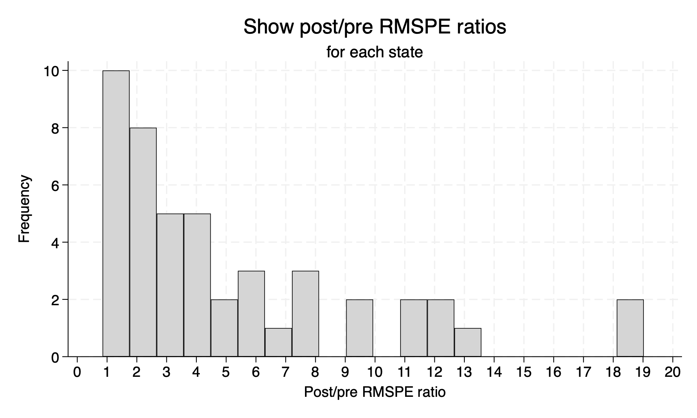
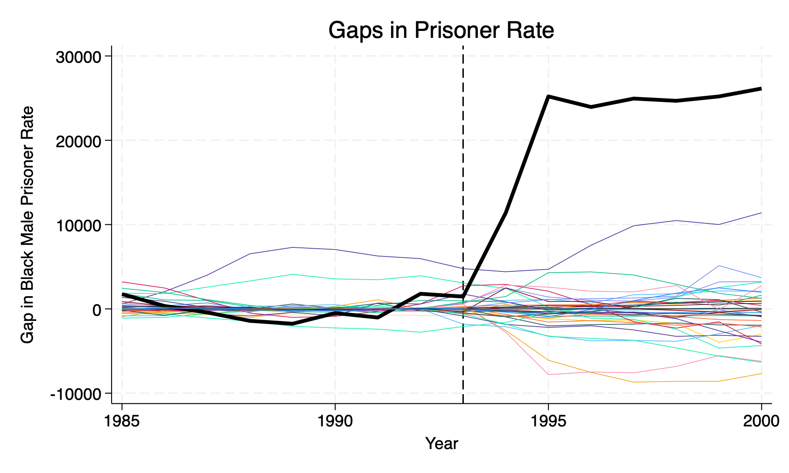
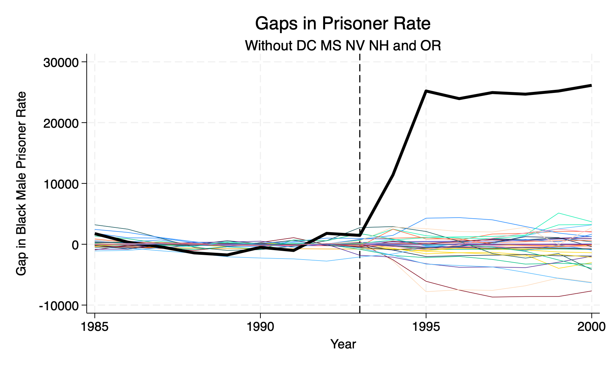

Chapter 2 Randomized Inference
We have estimated the difference between Texas and Synthetic Texas, but we have not been able to infer the impact. We will use randomized inference to test our hypothesis.
We will establish a null hypothesis of “no treatment effect”, and then use randomized inference to test the hypothesis.
Our process to get exact \(p\)-values will be the following:
- Loop through each state to calculate placebo treatments
- Calculate the \(RMSPE\) for each placebo state in the pre-treatment period
- Calculate the \(RMSPE\) for each placebo state in the post-treatment period
- Compute the ratio of \(\frac{post-treatment}{pre-treatment}\)
- Sort this ratio in descending order
- Calculate the treatment units ratio in the distribution of \(p=\frac{RANK}{Total}\)
2.1 Placebo Tests
First, we will set local macro with fips codes for the 39 states used. We will want to include Texas as part of the donor pool for each placebo test.
local statelist 1 2 4 5 6 8 9 10 11 12 13 15 16 17 18 20 21 22 23 24 25 26 27 28 ///
29 30 31 32 33 34 35 36 37 38 39 40 41 42 45 46 47 48 49 51 53 55 2.1.1 Caculate \(RMSPE\) for each state
Next, we will calculate the Root Mean Squared Prediction Error \(RMSPE\) for each state in the donor pool for each time period.
foreach i of local statelist {
synth bmprison ///
bmprison(1990) bmprison(1992) bmprison(1991) bmprison(1988) ///
alcohol(1990) aidscapita(1990) aidscapita(1991) ///
income ur poverty black(1990) black(1991) black(1992) ///
perc1519(1990), ///
trunit(`i') trperiod(1993) unitnames(state) ///
mspeperiod(1985(1)1993) resultsperiod(1985(1)2000) ///
keep(synth_bmprate_`i'.dta) replace
/* check the V matrix */
matrix state`i' = e(RMSPE)
}counter | pri_inf | dual_inf | pri_obj | dual_obj | sigfig | alpha | nu
----------------------------------------------------------------------------------
0 | 9.51e+01 | 9.77e-04 | -1.61e+00 | -5.02e+02 | 0.000 | 0.0000 | 1.00e+02
1 | 4.76e-01 | 4.88e-06 | -1.59e+00 | -9.08e+02 | 0.000 | 0.9950 | 2.07e-05
2 | 6.46e-03 | 6.63e-08 | -1.41e+00 | -2.55e+01 | 0.000 | 0.9864 | 1.52e-05
3 | 1.08e-03 | 1.11e-08 | -1.47e+00 | -5.50e+00 | 0.000 | 0.8333 | 5.78e-05
4 | 4.51e-05 | 4.63e-10 | -1.58e+00 | -1.80e+00 | 1.070 | 0.9581 | 5.91e-07
5 | 5.36e-06 | 5.51e-11 | -1.62e+00 | -1.67e+00 | 1.659 | 0.8812 | 2.62e-07
6 | 8.17e-07 | 8.39e-12 | -1.62e+00 | -1.63e+00 | 2.468 | 0.8476 | 1.13e-07
7 | 6.15e-07 | 6.32e-12 | -1.62e+00 | -1.62e+00 | 2.590 | 0.2470 | 4.81e-07
8 | 7.65e-08 | 7.85e-13 | -1.62e+00 | -1.62e+00 | 3.434 | 0.8757 | 8.79e-09
9 | 4.58e-08 | 4.70e-13 | -1.62e+00 | -1.62e+00 | 3.597 | 0.4009 | 3.20e-08
10 | 3.69e-09 | 3.79e-14 | -1.62e+00 | -1.62e+00 | 4.510 | 0.9194 | 3.61e-10
11 | 2.55e-09 | 2.62e-14 | -1.62e+00 | -1.62e+00 | 4.684 | 0.3096 | 3.63e-09
12 | 9.77e-10 | 1.00e-14 | -1.62e+00 | -1.62e+00 | 5.105 | 0.6169 | 7.06e-10
13 | 6.62e-12 | 7.59e-17 | -1.62e+00 | -1.62e+00 | 6.679 | 0.9932 | 7.80e-14
14 | 3.42e-14 | 2.46e-17 | -1.62e+00 | -1.62e+00 | 8.961 | 0.9948 | 1.21e-15
15 | 7.23e-16 | 1.56e-17 | -1.62e+00 | -1.62e+00 | 11.259 | 0.9950 | 5.92e-18
16 | 6.73e-16 | 2.00e-17 | -1.62e+00 | -1.62e+00 | 13.538 | 0.9950 | 2.98e-20
----------------------------------------------------------------------------------
optimization converged
counter | pri_inf | dual_inf | pri_obj | dual_obj | sigfig | alpha | nu
----------------------------------------------------------------------------------
0 | 9.51e+01 | 2.04e-02 | -5.74e-02 | -5.00e+02 | 0.000 | 0.0000 | 1.00e+02
1 | 6.07e-01 | 1.30e-04 | -5.41e-02 | -9.06e+02 | 0.000 | 0.9936 | 3.37e-05
2 | 3.04e-03 | 6.52e-07 | 4.93e-02 | -1.87e+01 | 0.000 | 0.9950 | 2.11e-06
3 | 8.62e-05 | 1.85e-08 | 3.36e-02 | -5.02e-01 | 0.285 | 0.9716 | 1.27e-06
4 | 3.13e-06 | 6.72e-10 | -4.33e-02 | -9.81e-02 | 1.279 | 0.9637 | 5.89e-08
5 | 1.60e-06 | 3.43e-10 | -4.98e-02 | -7.66e-02 | 1.593 | 0.4900 | 1.30e-06
6 | 5.13e-07 | 1.10e-10 | -5.41e-02 | -6.28e-02 | 2.085 | 0.6785 | 2.43e-07
7 | 1.05e-07 | 2.25e-11 | -5.65e-02 | -5.87e-02 | 2.688 | 0.7959 | 3.10e-08
8 | 4.15e-08 | 8.91e-12 | -5.72e-02 | -5.81e-02 | 3.098 | 0.6040 | 3.02e-08
9 | 9.42e-09 | 2.02e-12 | -5.76e-02 | -5.78e-02 | 3.697 | 0.7730 | 3.75e-09
10 | 1.48e-10 | 3.18e-14 | -5.77e-02 | -5.77e-02 | 4.850 | 0.9843 | 4.35e-12
11 | 8.62e-13 | 2.05e-16 | -5.77e-02 | -5.77e-02 | 6.874 | 0.9942 | 4.19e-14
12 | 4.32e-15 | 8.73e-17 | -5.77e-02 | -5.77e-02 | 9.173 | 0.9950 | 2.92e-16
13 | 7.54e-16 | 1.20e-16 | -5.77e-02 | -5.77e-02 | 11.471 | 0.9950 | 1.47e-18
14 | 7.61e-16 | 1.29e-16 | -5.77e-02 | -5.77e-02 | 13.765 | 0.9950 | 7.40e-21
----------------------------------------------------------------------------------
optimization converged
counter | pri_inf | dual_inf | pri_obj | dual_obj | sigfig | alpha | nu
----------------------------------------------------------------------------------
0 | 9.51e+01 | 1.85e-02 | -5.42e-02 | -5.00e+02 | 0.000 | 0.0000 | 1.00e+02
1 | 6.54e-01 | 1.27e-04 | -5.16e-02 | -9.06e+02 | 0.000 | 0.9931 | 3.91e-05
2 | 3.27e-03 | 6.36e-07 | 4.11e-02 | -1.95e+01 | 0.000 | 0.9950 | 2.13e-06
3 | 9.06e-05 | 1.76e-08 | 2.64e-02 | -5.19e-01 | 0.274 | 0.9723 | 1.26e-06
4 | 4.19e-06 | 8.15e-10 | -4.64e-02 | -1.06e-01 | 1.243 | 0.9538 | 9.71e-08
5 | 3.11e-07 | 6.06e-11 | -5.40e-02 | -6.08e-02 | 2.186 | 0.9256 | 2.77e-08
6 | 2.73e-07 | 5.31e-11 | -5.43e-02 | -6.04e-02 | 2.244 | 0.1242 | 5.14e-07
7 | 1.99e-07 | 3.87e-11 | -5.46e-02 | -5.90e-02 | 2.386 | 0.2704 | 3.04e-07
8 | 1.66e-08 | 3.22e-12 | -5.51e-02 | -5.56e-02 | 3.266 | 0.9167 | 2.52e-09
9 | 1.70e-09 | 3.31e-13 | -5.51e-02 | -5.51e-02 | 4.216 | 0.8973 | 5.07e-10
10 | 9.26e-10 | 1.80e-13 | -5.51e-02 | -5.51e-02 | 4.463 | 0.4557 | 1.74e-09
11 | 3.19e-10 | 6.22e-14 | -5.51e-02 | -5.51e-02 | 4.878 | 0.6550 | 3.81e-10
12 | 1.43e-10 | 2.78e-14 | -5.51e-02 | -5.51e-02 | 5.225 | 0.5525 | 2.51e-10
13 | 4.33e-11 | 8.42e-15 | -5.51e-02 | -5.51e-02 | 5.732 | 0.6972 | 5.03e-11
14 | 5.86e-13 | 1.72e-16 | -5.51e-02 | -5.51e-02 | 7.034 | 0.9865 | 2.97e-14
15 | 4.27e-14 | 1.12e-16 | -5.51e-02 | -5.51e-02 | 8.175 | 0.9272 | 4.34e-14
16 | 7.36e-16 | 9.42e-17 | -5.51e-02 | -5.51e-02 | 10.101 | 0.9909 | 4.84e-17
17 | 7.84e-16 | 7.92e-17 | -5.51e-02 | -5.51e-02 | 12.034 | 0.9945 | 2.10e-19
----------------------------------------------------------------------------------
optimization converged
counter | pri_inf | dual_inf | pri_obj | dual_obj | sigfig | alpha | nu
----------------------------------------------------------------------------------
0 | 9.51e+01 | 1.98e-03 | -5.97e-01 | -5.01e+02 | 0.000 | 0.0000 | 1.00e+02
1 | 5.74e-01 | 1.19e-05 | -5.90e-01 | -9.07e+02 | 0.000 | 0.9940 | 3.01e-05
2 | 4.44e-03 | 9.24e-08 | -5.55e-01 | -2.11e+01 | 0.000 | 0.9923 | 5.02e-06
3 | 2.85e-04 | 5.94e-09 | -5.60e-01 | -1.89e+00 | 0.069 | 0.9357 | 7.22e-06
4 | 3.41e-05 | 7.09e-10 | -5.82e-01 | -7.48e-01 | 0.980 | 0.8806 | 1.60e-06
5 | 1.11e-05 | 2.30e-10 | -5.97e-01 | -6.58e-01 | 1.415 | 0.6751 | 1.53e-06
6 | 8.46e-07 | 1.76e-11 | -5.99e-01 | -6.05e-01 | 2.451 | 0.9235 | 3.01e-08
7 | 8.05e-08 | 1.67e-12 | -5.99e-01 | -6.00e-01 | 3.341 | 0.9049 | 4.30e-09
8 | 5.50e-08 | 1.15e-12 | -6.00e-01 | -6.00e-01 | 3.431 | 0.3162 | 3.20e-08
9 | 4.43e-09 | 9.23e-14 | -6.00e-01 | -6.00e-01 | 4.396 | 0.9194 | 3.23e-10
10 | 2.21e-09 | 4.59e-14 | -6.00e-01 | -6.00e-01 | 4.715 | 0.5023 | 1.44e-09
11 | 2.13e-09 | 4.44e-14 | -6.00e-01 | -6.00e-01 | 4.727 | 0.0337 | 2.86e-09
12 | 4.64e-10 | 9.65e-15 | -6.00e-01 | -6.00e-01 | 5.367 | 0.7826 | 1.22e-10
13 | 1.29e-11 | 2.66e-16 | -6.00e-01 | -6.00e-01 | 6.813 | 0.9722 | 4.42e-13
14 | 6.45e-14 | 2.79e-17 | -6.00e-01 | -6.00e-01 | 9.098 | 0.9950 | 5.08e-16
15 | 8.24e-16 | 3.53e-17 | -6.00e-01 | -6.00e-01 | 11.396 | 0.9950 | 2.64e-18
16 | 6.52e-16 | 2.49e-17 | -6.00e-01 | -6.00e-01 | 13.704 | 0.9950 | 1.33e-20
----------------------------------------------------------------------------------
optimization converged
counter | pri_inf | dual_inf | pri_obj | dual_obj | sigfig | alpha | nu
----------------------------------------------------------------------------------
0 | 9.51e+01 | 2.58e-03 | -2.52e+00 | -5.02e+02 | 0.000 | 0.0000 | 1.00e+02
1 | 1.23e+00 | 3.35e-05 | -2.37e+00 | -9.05e+02 | 0.000 | 0.9870 | 1.40e-04
2 | 4.81e-02 | 1.30e-06 | -1.45e+00 | -6.07e+01 | 0.000 | 0.9611 | 1.44e-04
3 | 3.83e-03 | 1.04e-07 | -1.47e+00 | -6.75e+00 | 0.000 | 0.9204 | 3.37e-05
4 | 1.69e-03 | 4.58e-08 | -2.10e+00 | -4.63e+00 | 0.089 | 0.5594 | 9.27e-05
5 | 1.07e-04 | 2.90e-09 | -2.30e+00 | -2.53e+00 | 1.167 | 0.9367 | 8.52e-07
6 | 2.34e-05 | 6.36e-10 | -2.36e+00 | -2.41e+00 | 1.796 | 0.7807 | 9.32e-07
7 | 2.27e-05 | 6.17e-10 | -2.36e+00 | -2.41e+00 | 1.809 | 0.0303 | 5.02e-06
8 | 8.66e-06 | 2.35e-10 | -2.37e+00 | -2.39e+00 | 2.241 | 0.6190 | 6.71e-07
9 | 1.02e-07 | 2.75e-12 | -2.38e+00 | -2.38e+00 | 3.937 | 0.9883 | 2.21e-10
10 | 5.12e-10 | 1.39e-14 | -2.38e+00 | -2.38e+00 | 6.230 | 0.9950 | 8.24e-13
11 | 2.56e-12 | 6.50e-17 | -2.38e+00 | -2.38e+00 | 8.527 | 0.9950 | 4.12e-15
12 | 1.28e-14 | 2.00e-17 | -2.38e+00 | -2.38e+00 | 10.825 | 0.9950 | 2.08e-17
13 | 6.22e-16 | 2.12e-17 | -2.38e+00 | -2.38e+00 | 13.124 | 0.9950 | 1.05e-19
----------------------------------------------------------------------------------
optimization converged
counter | pri_inf | dual_inf | pri_obj | dual_obj | sigfig | alpha | nu
----------------------------------------------------------------------------------
0 | 9.51e+01 | 1.64e-02 | -6.51e-02 | -5.00e+02 | 0.000 | 0.0000 | 1.00e+02
1 | 5.57e-01 | 9.61e-05 | -6.10e-02 | -9.06e+02 | 0.000 | 0.9941 | 2.84e-05
2 | 2.78e-03 | 4.81e-07 | 2.02e-02 | -1.78e+01 | 0.000 | 0.9950 | 2.09e-06
3 | 7.62e-05 | 1.32e-08 | 6.32e-03 | -4.86e-01 | 0.311 | 0.9726 | 1.12e-06
4 | 3.95e-06 | 6.82e-10 | -5.70e-02 | -1.12e-01 | 1.285 | 0.9482 | 1.10e-07
5 | 1.66e-06 | 2.86e-10 | -6.24e-02 | -8.47e-02 | 1.679 | 0.5808 | 8.61e-07
6 | 7.33e-07 | 1.27e-10 | -6.44e-02 | -7.41e-02 | 2.043 | 0.5573 | 3.91e-07
7 | 3.72e-07 | 6.42e-11 | -6.58e-02 | -7.07e-02 | 2.344 | 0.4929 | 2.25e-07
8 | 7.36e-08 | 1.27e-11 | -6.65e-02 | -6.76e-02 | 2.995 | 0.8021 | 1.62e-08
9 | 2.14e-08 | 3.70e-12 | -6.67e-02 | -6.70e-02 | 3.515 | 0.7091 | 7.96e-09
10 | 5.71e-09 | 9.86e-13 | -6.68e-02 | -6.69e-02 | 4.003 | 0.7332 | 2.01e-09
11 | 2.94e-09 | 5.08e-13 | -6.68e-02 | -6.69e-02 | 4.302 | 0.4845 | 2.56e-09
12 | 1.20e-10 | 2.07e-14 | -6.68e-02 | -6.68e-02 | 5.067 | 0.9593 | 7.33e-12
13 | 2.58e-12 | 4.51e-16 | -6.68e-02 | -6.68e-02 | 6.574 | 0.9784 | 3.52e-13
14 | 1.29e-14 | 6.22e-17 | -6.68e-02 | -6.68e-02 | 8.842 | 0.9950 | 5.95e-16
15 | 9.26e-16 | 6.45e-17 | -6.68e-02 | -6.68e-02 | 11.140 | 0.9950 | 3.17e-18
16 | 7.70e-16 | 7.65e-17 | -6.68e-02 | -6.68e-02 | 13.436 | 0.9950 | 1.60e-20
----------------------------------------------------------------------------------
optimization converged
counter | pri_inf | dual_inf | pri_obj | dual_obj | sigfig | alpha | nu
----------------------------------------------------------------------------------
0 | 9.51e+01 | 3.96e-03 | -2.30e-01 | -5.00e+02 | 0.000 | 0.0000 | 1.00e+02
1 | 4.76e-01 | 1.98e-05 | -2.29e-01 | -9.07e+02 | 0.000 | 0.9950 | 2.07e-05
2 | 2.38e-03 | 9.89e-08 | -2.17e-01 | -1.66e+01 | 0.000 | 0.9950 | 2.06e-06
3 | 3.56e-05 | 1.48e-09 | -2.20e-01 | -4.66e-01 | 0.694 | 0.9850 | 3.06e-07
4 | 1.74e-06 | 7.24e-11 | -2.29e-01 | -2.45e-01 | 1.879 | 0.9511 | 4.92e-08
5 | 1.40e-07 | 5.81e-12 | -2.30e-01 | -2.32e-01 | 2.775 | 0.9198 | 8.77e-09
6 | 4.64e-08 | 1.93e-12 | -2.30e-01 | -2.31e-01 | 3.247 | 0.6682 | 1.99e-08
7 | 1.87e-08 | 7.78e-13 | -2.30e-01 | -2.31e-01 | 3.649 | 0.5964 | 1.01e-08
8 | 6.16e-09 | 2.56e-13 | -2.30e-01 | -2.30e-01 | 4.117 | 0.6709 | 2.63e-09
9 | 4.89e-10 | 2.04e-14 | -2.30e-01 | -2.30e-01 | 5.014 | 0.9206 | 4.97e-11
10 | 1.67e-11 | 6.87e-16 | -2.30e-01 | -2.30e-01 | 6.418 | 0.9658 | 1.16e-12
11 | 8.37e-14 | 6.01e-17 | -2.30e-01 | -2.30e-01 | 8.698 | 0.9950 | 9.71e-16
12 | 8.04e-16 | 4.97e-17 | -2.30e-01 | -2.30e-01 | 10.996 | 0.9950 | 5.10e-18
13 | 7.37e-16 | 4.75e-17 | -2.30e-01 | -2.30e-01 | 13.293 | 0.9950 | 2.57e-20
----------------------------------------------------------------------------------
optimization converged
counter | pri_inf | dual_inf | pri_obj | dual_obj | sigfig | alpha | nu
----------------------------------------------------------------------------------
0 | 9.51e+01 | 1.98e-03 | -6.93e-01 | -5.01e+02 | 0.000 | 0.0000 | 1.00e+02
1 | 7.06e-01 | 1.47e-05 | -6.85e-01 | -9.06e+02 | 0.000 | 0.9926 | 4.56e-05
2 | 8.38e-03 | 1.74e-07 | -6.11e-01 | -2.72e+01 | 0.000 | 0.9881 | 1.21e-05
3 | 7.09e-04 | 1.47e-08 | -6.20e-01 | -2.89e+00 | 0.000 | 0.9154 | 1.63e-05
4 | 3.06e-05 | 6.36e-10 | -6.67e-01 | -7.88e-01 | 1.139 | 0.9568 | 3.53e-07
5 | 4.84e-06 | 1.01e-10 | -6.87e-01 | -7.12e-01 | 1.832 | 0.8420 | 2.57e-07
6 | 4.13e-07 | 8.59e-12 | -6.93e-01 | -6.97e-01 | 2.650 | 0.9146 | 1.52e-08
7 | 7.21e-09 | 1.50e-13 | -6.94e-01 | -6.95e-01 | 3.566 | 0.9826 | 9.55e-11
8 | 1.20e-09 | 2.50e-14 | -6.94e-01 | -6.94e-01 | 4.239 | 0.8331 | 1.09e-09
9 | 7.75e-10 | 1.61e-14 | -6.94e-01 | -6.94e-01 | 4.452 | 0.3557 | 3.78e-09
10 | 5.45e-10 | 1.13e-14 | -6.94e-01 | -6.94e-01 | 4.621 | 0.2975 | 2.79e-09
11 | 1.57e-10 | 3.26e-15 | -6.94e-01 | -6.94e-01 | 4.852 | 0.7114 | 2.95e-10
12 | 2.78e-12 | 4.98e-17 | -6.94e-01 | -6.94e-01 | 5.966 | 0.9823 | 6.18e-13
13 | 3.13e-14 | 3.78e-17 | -6.94e-01 | -6.94e-01 | 7.192 | 0.9887 | 1.93e-14
14 | 7.55e-16 | 3.34e-17 | -6.94e-01 | -6.94e-01 | 9.361 | 0.9949 | 2.31e-16
15 | 5.18e-16 | 3.59e-17 | -6.94e-01 | -6.94e-01 | 11.660 | 0.9950 | 1.52e-18
16 | 8.32e-16 | 4.21e-17 | -6.94e-01 | -6.94e-01 | 13.977 | 0.9950 | 7.67e-21
----------------------------------------------------------------------------------
optimization converged
counter | pri_inf | dual_inf | pri_obj | dual_obj | sigfig | alpha | nu
----------------------------------------------------------------------------------
0 | 9.51e+01 | 9.41e-04 | -1.12e+01 | -5.10e+02 | 0.000 | 0.0000 | 1.00e+02
1 | 1.58e+00 | 1.56e-05 | -1.06e+01 | -9.10e+02 | 0.000 | 0.9834 | 2.28e-04
2 | 1.42e-01 | 1.40e-06 | -6.25e+00 | -1.14e+02 | 0.000 | 0.9103 | 8.10e-04
3 | 7.03e-03 | 6.96e-08 | -5.68e+00 | -1.36e+01 | 0.000 | 0.9503 | 2.51e-05
4 | 1.89e-03 | 1.87e-08 | -7.77e+00 | -1.01e+01 | 0.569 | 0.7310 | 5.14e-05
5 | 3.64e-05 | 3.60e-10 | -8.34e+00 | -8.41e+00 | 2.122 | 0.9808 | 7.41e-08
6 | 1.82e-07 | 1.80e-12 | -8.38e+00 | -8.38e+00 | 4.407 | 0.9950 | 1.47e-10
7 | 9.09e-10 | 9.00e-15 | -8.38e+00 | -8.38e+00 | 6.705 | 0.9950 | 7.67e-13
8 | 4.55e-12 | 4.61e-17 | -8.38e+00 | -8.38e+00 | 9.002 | 0.9950 | 3.87e-15
9 | 2.28e-14 | 1.34e-17 | -8.38e+00 | -8.38e+00 | 11.300 | 0.9950 | 1.95e-17
10 | 5.76e-16 | 1.10e-17 | -8.38e+00 | -8.38e+00 | 13.596 | 0.9950 | 9.83e-20
----------------------------------------------------------------------------------
optimization converged
counter | pri_inf | dual_inf | pri_obj | dual_obj | sigfig | alpha | nu
----------------------------------------------------------------------------------
0 | 9.51e+01 | 1.66e-03 | -1.84e+00 | -5.02e+02 | 0.000 | 0.0000 | 1.00e+02
1 | 5.43e-01 | 9.46e-06 | -1.79e+00 | -9.08e+02 | 0.000 | 0.9943 | 2.70e-05
2 | 1.20e-02 | 2.10e-07 | -1.41e+00 | -3.45e+01 | 0.000 | 0.9778 | 4.12e-05
3 | 1.32e-03 | 2.30e-08 | -1.46e+00 | -5.14e+00 | 0.000 | 0.8901 | 3.45e-05
4 | 2.27e-04 | 3.95e-09 | -1.80e+00 | -2.66e+00 | 0.513 | 0.8285 | 9.26e-06
5 | 1.09e-05 | 1.90e-10 | -1.84e+00 | -1.90e+00 | 1.681 | 0.9519 | 1.66e-07
6 | 4.31e-06 | 7.50e-11 | -1.84e+00 | -1.87e+00 | 2.097 | 0.6052 | 8.21e-07
7 | 1.80e-06 | 3.14e-11 | -1.85e+00 | -1.85e+00 | 2.483 | 0.5813 | 3.57e-07
8 | 1.32e-07 | 2.30e-12 | -1.85e+00 | -1.85e+00 | 3.231 | 0.9267 | 4.21e-09
9 | 4.33e-08 | 7.54e-13 | -1.85e+00 | -1.85e+00 | 3.718 | 0.6724 | 1.58e-08
10 | 2.58e-08 | 4.49e-13 | -1.85e+00 | -1.85e+00 | 3.924 | 0.4045 | 1.79e-08
11 | 1.33e-09 | 2.32e-14 | -1.85e+00 | -1.85e+00 | 5.148 | 0.9483 | 7.55e-11
12 | 7.12e-12 | 1.17e-16 | -1.85e+00 | -1.85e+00 | 7.381 | 0.9947 | 4.79e-14
13 | 3.56e-14 | 2.13e-17 | -1.85e+00 | -1.85e+00 | 9.679 | 0.9950 | 2.45e-16
14 | 8.10e-16 | 2.06e-17 | -1.85e+00 | -1.85e+00 | 11.977 | 0.9950 | 1.23e-18
15 | 5.53e-16 | 1.85e-17 | -1.85e+00 | -1.85e+00 | 14.352 | 0.9950 | 6.22e-21
----------------------------------------------------------------------------------
optimization converged
counter | pri_inf | dual_inf | pri_obj | dual_obj | sigfig | alpha | nu
----------------------------------------------------------------------------------
0 | 9.51e+01 | 7.66e-04 | -2.15e+00 | -5.02e+02 | 0.000 | 0.0000 | 1.00e+02
1 | 5.24e-01 | 4.22e-06 | -2.15e+00 | -9.08e+02 | 0.000 | 0.9945 | 2.51e-05
2 | 7.92e-03 | 6.37e-08 | -1.82e+00 | -2.81e+01 | 0.000 | 0.9849 | 1.91e-05
3 | 1.50e-03 | 1.21e-08 | -1.92e+00 | -6.93e+00 | 0.000 | 0.8104 | 8.24e-05
4 | 1.98e-04 | 1.59e-09 | -2.09e+00 | -2.80e+00 | 0.639 | 0.8683 | 7.40e-06
5 | 2.55e-05 | 2.05e-10 | -2.14e+00 | -2.25e+00 | 1.430 | 0.8711 | 9.99e-07
6 | 1.94e-05 | 1.56e-10 | -2.15e+00 | -2.23e+00 | 1.554 | 0.2383 | 6.46e-06
7 | 3.06e-07 | 2.46e-12 | -2.16e+00 | -2.17e+00 | 2.545 | 0.9842 | 1.81e-09
8 | 2.58e-08 | 2.08e-13 | -2.16e+00 | -2.16e+00 | 3.523 | 0.9157 | 5.37e-09
9 | 1.24e-08 | 1.00e-13 | -2.16e+00 | -2.16e+00 | 3.840 | 0.5177 | 1.99e-08
10 | 3.52e-09 | 2.83e-14 | -2.16e+00 | -2.16e+00 | 4.357 | 0.7174 | 3.17e-09
11 | 4.70e-11 | 3.88e-16 | -2.16e+00 | -2.16e+00 | 5.323 | 0.9866 | 2.06e-12
12 | 1.97e-11 | 1.62e-16 | -2.16e+00 | -2.16e+00 | 5.589 | 0.5809 | 2.35e-10
13 | 1.91e-11 | 1.46e-16 | -2.16e+00 | -2.16e+00 | 5.605 | 0.0326 | 7.56e-10
14 | 2.49e-12 | 2.62e-17 | -2.16e+00 | -2.16e+00 | 6.302 | 0.8693 | 1.14e-11
15 | 1.75e-13 | 2.44e-17 | -2.16e+00 | -2.16e+00 | 7.413 | 0.9296 | 6.53e-13
16 | 1.11e-15 | 1.91e-17 | -2.16e+00 | -2.16e+00 | 9.652 | 0.9948 | 2.71e-16
17 | 8.05e-16 | 1.69e-17 | -2.16e+00 | -2.16e+00 | 11.949 | 0.9950 | 1.46e-18
18 | 6.99e-16 | 1.40e-17 | -2.16e+00 | -2.16e+00 | 14.361 | 0.9950 | 7.33e-21
----------------------------------------------------------------------------------
optimization converged
counter | pri_inf | dual_inf | pri_obj | dual_obj | sigfig | alpha | nu
----------------------------------------------------------------------------------
0 | 9.51e+01 | 1.03e-02 | -1.26e-01 | -5.00e+02 | 0.000 | 0.0000 | 1.00e+02
1 | 6.48e-01 | 7.01e-05 | -1.20e-01 | -9.06e+02 | 0.000 | 0.9932 | 3.84e-05
2 | 3.24e-03 | 3.50e-07 | -4.51e-02 | -1.95e+01 | 0.000 | 0.9950 | 2.13e-06
3 | 7.53e-05 | 8.14e-09 | -5.52e-02 | -5.11e-01 | 0.364 | 0.9768 | 8.81e-07
4 | 4.16e-06 | 4.49e-10 | -1.07e-01 | -1.52e-01 | 1.388 | 0.9448 | 1.16e-07
5 | 8.62e-08 | 9.32e-12 | -1.23e-01 | -1.30e-01 | 2.222 | 0.9793 | 1.62e-09
6 | 1.96e-08 | 2.11e-12 | -1.25e-01 | -1.27e-01 | 2.820 | 0.7731 | 2.99e-08
7 | 1.79e-09 | 1.93e-13 | -1.26e-01 | -1.27e-01 | 3.719 | 0.9085 | 1.20e-09
8 | 2.40e-11 | 2.63e-15 | -1.27e-01 | -1.27e-01 | 5.416 | 0.9866 | 3.20e-12
9 | 1.20e-13 | 1.32e-16 | -1.27e-01 | -1.27e-01 | 7.705 | 0.9950 | 9.00e-15
10 | 9.98e-16 | 1.25e-16 | -1.27e-01 | -1.27e-01 | 10.003 | 0.9950 | 4.59e-17
11 | 7.55e-16 | 9.69e-17 | -1.27e-01 | -1.27e-01 | 12.300 | 0.9950 | 2.32e-19
----------------------------------------------------------------------------------
optimization converged
counter | pri_inf | dual_inf | pri_obj | dual_obj | sigfig | alpha | nu
----------------------------------------------------------------------------------
0 | 9.51e+01 | 1.80e-01 | -3.30e-03 | -5.00e+02 | 0.000 | 0.0000 | 1.00e+02
1 | 8.79e-01 | 1.67e-03 | 2.87e-04 | -9.05e+02 | 0.000 | 0.9908 | 7.07e-05
2 | 4.40e-03 | 8.33e-06 | 2.38e-01 | -2.31e+01 | 0.000 | 0.9950 | 2.22e-06
3 | 1.58e-04 | 3.00e-07 | 2.08e-01 | -6.38e-01 | 0.154 | 0.9640 | 2.54e-06
4 | 1.91e-06 | 3.62e-09 | 3.32e-02 | -5.12e-02 | 1.088 | 0.9879 | 1.02e-08
5 | 2.04e-07 | 3.87e-10 | 3.87e-03 | -1.22e-02 | 1.795 | 0.8931 | 8.13e-08
6 | 4.05e-09 | 7.68e-12 | -2.59e-03 | -4.97e-03 | 2.624 | 0.9801 | 5.26e-10
7 | 1.01e-09 | 1.90e-12 | -3.39e-03 | -4.06e-03 | 3.178 | 0.7521 | 1.27e-08
8 | 3.11e-10 | 5.88e-13 | -3.61e-03 | -3.82e-03 | 3.671 | 0.6910 | 5.56e-09
9 | 1.26e-10 | 2.38e-13 | -3.67e-03 | -3.76e-03 | 4.077 | 0.5956 | 3.12e-09
10 | 2.35e-11 | 4.46e-14 | -3.72e-03 | -3.74e-03 | 4.701 | 0.8127 | 2.52e-10
11 | 9.90e-12 | 1.88e-14 | -3.72e-03 | -3.74e-03 | 4.724 | 0.5789 | 3.17e-10
12 | 7.05e-13 | 1.33e-15 | -3.73e-03 | -3.73e-03 | 5.566 | 0.9288 | 8.04e-12
13 | 2.91e-14 | 9.70e-17 | -3.73e-03 | -3.73e-03 | 6.667 | 0.9588 | 3.85e-13
14 | 7.05e-16 | 9.90e-17 | -3.73e-03 | -3.73e-03 | 8.429 | 0.9937 | 7.20e-16
15 | 7.93e-16 | 1.25e-16 | -3.73e-03 | -3.73e-03 | 10.728 | 0.9950 | 7.73e-18
16 | 6.30e-16 | 6.77e-17 | -3.73e-03 | -3.73e-03 | 13.026 | 0.9950 | 3.88e-20
----------------------------------------------------------------------------------
optimization converged
counter | pri_inf | dual_inf | pri_obj | dual_obj | sigfig | alpha | nu
----------------------------------------------------------------------------------
0 | 9.51e+01 | 1.35e-03 | -1.23e+00 | -5.01e+02 | 0.000 | 0.0000 | 1.00e+02
1 | 4.76e-01 | 6.74e-06 | -1.21e+00 | -9.08e+02 | 0.000 | 0.9950 | 2.07e-05
2 | 5.26e-03 | 7.46e-08 | -1.07e+00 | -2.29e+01 | 0.000 | 0.9889 | 1.01e-05
3 | 3.73e-04 | 5.29e-09 | -1.09e+00 | -2.65e+00 | 0.128 | 0.9291 | 9.32e-06
4 | 5.46e-05 | 7.73e-10 | -1.22e+00 | -1.54e+00 | 0.840 | 0.8539 | 2.83e-06
5 | 1.20e-05 | 1.71e-10 | -1.22e+00 | -1.29e+00 | 1.494 | 0.7794 | 1.34e-06
6 | 8.86e-06 | 1.26e-10 | -1.23e+00 | -1.28e+00 | 1.633 | 0.2637 | 3.67e-06
7 | 6.82e-06 | 9.66e-11 | -1.23e+00 | -1.27e+00 | 1.751 | 0.2309 | 2.93e-06
8 | 2.97e-06 | 4.21e-11 | -1.23e+00 | -1.25e+00 | 2.110 | 0.5644 | 6.72e-07
9 | 7.37e-07 | 1.04e-11 | -1.23e+00 | -1.23e+00 | 2.692 | 0.7519 | 9.21e-08
10 | 5.02e-07 | 7.11e-12 | -1.23e+00 | -1.23e+00 | 2.868 | 0.3190 | 1.97e-07
11 | 7.01e-08 | 9.93e-13 | -1.23e+00 | -1.23e+00 | 3.601 | 0.8603 | 5.00e-09
12 | 2.35e-08 | 3.33e-13 | -1.23e+00 | -1.23e+00 | 4.080 | 0.6644 | 5.54e-09
13 | 6.34e-09 | 8.98e-14 | -1.23e+00 | -1.23e+00 | 4.571 | 0.7305 | 1.17e-09
14 | 2.54e-09 | 3.60e-14 | -1.23e+00 | -1.23e+00 | 4.976 | 0.5991 | 8.58e-10
15 | 9.42e-10 | 1.33e-14 | -1.23e+00 | -1.23e+00 | 5.410 | 0.6294 | 2.87e-10
16 | 8.31e-12 | 1.17e-16 | -1.23e+00 | -1.23e+00 | 7.101 | 0.9912 | 5.60e-14
17 | 4.82e-14 | 1.65e-17 | -1.23e+00 | -1.23e+00 | 9.334 | 0.9942 | 4.92e-16
18 | 8.82e-16 | 1.70e-17 | -1.23e+00 | -1.23e+00 | 11.631 | 0.9950 | 2.14e-18
19 | 7.46e-16 | 1.81e-17 | -1.23e+00 | -1.23e+00 | 13.919 | 0.9950 | 1.08e-20
----------------------------------------------------------------------------------
optimization converged
counter | pri_inf | dual_inf | pri_obj | dual_obj | sigfig | alpha | nu
----------------------------------------------------------------------------------
0 | 9.51e+01 | 4.76e-03 | -1.90e-01 | -5.00e+02 | 0.000 | 0.0000 | 1.00e+02
1 | 4.98e-01 | 2.49e-05 | -1.89e-01 | -9.07e+02 | 0.000 | 0.9948 | 2.27e-05
2 | 2.49e-03 | 1.25e-07 | -1.70e-01 | -1.69e+01 | 0.000 | 0.9950 | 2.07e-06
3 | 4.32e-05 | 2.16e-09 | -1.74e-01 | -4.67e-01 | 0.603 | 0.9827 | 4.21e-07
4 | 2.90e-06 | 1.45e-10 | -1.89e-01 | -2.15e-01 | 1.654 | 0.9328 | 1.11e-07
5 | 2.03e-07 | 1.02e-11 | -1.89e-01 | -1.92e-01 | 2.762 | 0.9299 | 1.08e-08
6 | 2.02e-08 | 1.01e-12 | -1.90e-01 | -1.90e-01 | 3.593 | 0.9008 | 1.71e-09
7 | 6.91e-09 | 3.46e-13 | -1.90e-01 | -1.90e-01 | 4.065 | 0.6574 | 3.14e-09
8 | 1.26e-09 | 6.31e-14 | -1.90e-01 | -1.90e-01 | 4.729 | 0.8176 | 2.91e-10
9 | 2.28e-10 | 1.14e-14 | -1.90e-01 | -1.90e-01 | 5.259 | 0.8189 | 6.22e-11
10 | 9.46e-11 | 4.74e-15 | -1.90e-01 | -1.90e-01 | 5.637 | 0.5856 | 1.00e-10
11 | 4.38e-12 | 2.28e-16 | -1.90e-01 | -1.90e-01 | 6.792 | 0.9537 | 4.90e-13
12 | 8.43e-14 | 4.32e-17 | -1.90e-01 | -1.90e-01 | 8.360 | 0.9808 | 5.90e-15
13 | 3.37e-14 | 4.41e-17 | -1.90e-01 | -1.90e-01 | 8.764 | 0.5995 | 7.42e-14
14 | 1.05e-15 | 5.00e-17 | -1.90e-01 | -1.90e-01 | 10.383 | 0.9827 | 5.11e-17
15 | 9.56e-16 | 4.16e-17 | -1.90e-01 | -1.90e-01 | 12.617 | 0.9943 | 1.32e-19
----------------------------------------------------------------------------------
optimization converged
counter | pri_inf | dual_inf | pri_obj | dual_obj | sigfig | alpha | nu
----------------------------------------------------------------------------------
0 | 9.51e+01 | 1.06e-02 | -9.22e-02 | -5.00e+02 | 0.000 | 0.0000 | 1.00e+02
1 | 5.31e-01 | 5.90e-05 | -9.05e-02 | -9.06e+02 | 0.000 | 0.9944 | 2.58e-05
2 | 2.65e-03 | 2.95e-07 | -3.10e-02 | -1.74e+01 | 0.000 | 0.9950 | 2.08e-06
3 | 6.57e-05 | 7.31e-09 | -4.14e-02 | -4.75e-01 | 0.381 | 0.9752 | 8.93e-07
4 | 3.31e-06 | 3.68e-10 | -8.76e-02 | -1.31e-01 | 1.394 | 0.9497 | 9.16e-08
5 | 4.97e-07 | 5.53e-11 | -9.16e-02 | -9.88e-02 | 2.183 | 0.8498 | 8.41e-08
6 | 4.99e-08 | 5.55e-12 | -9.24e-02 | -9.35e-02 | 3.001 | 0.8995 | 6.08e-09
7 | 1.64e-08 | 1.83e-12 | -9.24e-02 | -9.27e-02 | 3.487 | 0.6711 | 1.03e-08
8 | 6.86e-09 | 7.63e-13 | -9.24e-02 | -9.26e-02 | 3.865 | 0.5823 | 5.54e-09
9 | 5.38e-09 | 5.98e-13 | -9.24e-02 | -9.25e-02 | 3.978 | 0.2157 | 8.79e-09
10 | 2.09e-09 | 2.32e-13 | -9.24e-02 | -9.25e-02 | 4.375 | 0.6120 | 1.54e-09
11 | 1.15e-09 | 1.28e-13 | -9.24e-02 | -9.25e-02 | 4.623 | 0.4502 | 1.28e-09
12 | 4.97e-10 | 5.52e-14 | -9.25e-02 | -9.25e-02 | 4.989 | 0.5673 | 4.36e-10
13 | 8.19e-11 | 9.11e-15 | -9.25e-02 | -9.25e-02 | 5.706 | 0.8351 | 2.60e-11
14 | 3.33e-12 | 3.75e-16 | -9.25e-02 | -9.25e-02 | 6.973 | 0.9594 | 2.96e-13
15 | 7.67e-14 | 7.10e-17 | -9.25e-02 | -9.25e-02 | 8.243 | 0.9769 | 5.14e-15
16 | 9.12e-16 | 6.60e-17 | -9.25e-02 | -9.25e-02 | 9.778 | 0.9924 | 3.02e-17
17 | 6.21e-16 | 8.14e-17 | -9.25e-02 | -9.25e-02 | 12.045 | 0.9950 | 3.77e-19
----------------------------------------------------------------------------------
optimization converged
counter | pri_inf | dual_inf | pri_obj | dual_obj | sigfig | alpha | nu
----------------------------------------------------------------------------------
0 | 9.51e+01 | 7.21e-03 | -1.32e-01 | -5.00e+02 | 0.000 | 0.0000 | 1.00e+02
1 | 4.95e-01 | 3.75e-05 | -1.30e-01 | -9.07e+02 | 0.000 | 0.9948 | 2.24e-05
2 | 2.48e-03 | 1.88e-07 | -9.21e-02 | -1.68e+01 | 0.000 | 0.9950 | 2.07e-06
3 | 5.39e-05 | 4.08e-09 | -9.92e-02 | -4.65e-01 | 0.477 | 0.9782 | 6.62e-07
4 | 3.69e-06 | 2.80e-10 | -1.29e-01 | -1.67e-01 | 1.466 | 0.9314 | 1.44e-07
5 | 5.95e-07 | 4.51e-11 | -1.32e-01 | -1.38e-01 | 2.227 | 0.8390 | 8.51e-08
6 | 4.61e-08 | 3.50e-12 | -1.32e-01 | -1.33e-01 | 3.153 | 0.9225 | 3.38e-09
7 | 1.11e-08 | 8.38e-13 | -1.32e-01 | -1.33e-01 | 3.728 | 0.7601 | 3.95e-09
8 | 1.61e-09 | 1.22e-13 | -1.32e-01 | -1.32e-01 | 4.423 | 0.8542 | 3.82e-10
9 | 6.25e-10 | 4.74e-14 | -1.32e-01 | -1.32e-01 | 4.840 | 0.6124 | 5.70e-10
10 | 5.61e-10 | 4.25e-14 | -1.32e-01 | -1.32e-01 | 4.886 | 0.1026 | 1.29e-09
11 | 1.83e-10 | 1.39e-14 | -1.32e-01 | -1.32e-01 | 5.356 | 0.6739 | 1.37e-10
12 | 7.98e-11 | 6.06e-15 | -1.32e-01 | -1.32e-01 | 5.724 | 0.5635 | 8.51e-11
13 | 6.64e-11 | 5.03e-15 | -1.32e-01 | -1.32e-01 | 5.767 | 0.1681 | 1.43e-10
14 | 1.14e-11 | 8.76e-16 | -1.32e-01 | -1.32e-01 | 6.516 | 0.8277 | 4.90e-12
15 | 8.77e-13 | 8.91e-17 | -1.32e-01 | -1.32e-01 | 7.613 | 0.9233 | 1.70e-13
16 | 1.09e-14 | 4.84e-17 | -1.32e-01 | -1.32e-01 | 9.418 | 0.9876 | 3.51e-16
17 | 9.15e-16 | 6.13e-17 | -1.32e-01 | -1.32e-01 | 11.306 | 0.9939 | 1.33e-18
18 | 6.75e-16 | 5.09e-17 | -1.32e-01 | -1.32e-01 | 13.603 | 0.9950 | 1.16e-20
----------------------------------------------------------------------------------
optimization converged
counter | pri_inf | dual_inf | pri_obj | dual_obj | sigfig | alpha | nu
----------------------------------------------------------------------------------
0 | 9.51e+01 | 7.56e-04 | -2.61e+00 | -5.03e+02 | 0.000 | 0.0000 | 1.00e+02
1 | 5.57e-01 | 4.43e-06 | -2.59e+00 | -9.09e+02 | 0.000 | 0.9941 | 2.83e-05
2 | 1.10e-02 | 8.77e-08 | -2.14e+00 | -3.32e+01 | 0.000 | 0.9802 | 3.30e-05
3 | 2.35e-03 | 1.87e-08 | -2.29e+00 | -8.96e+00 | 0.000 | 0.7872 | 1.24e-04
4 | 1.60e-04 | 1.27e-09 | -2.53e+00 | -3.09e+00 | 0.802 | 0.9319 | 2.60e-06
5 | 4.57e-05 | 3.63e-10 | -2.57e+00 | -2.74e+00 | 1.323 | 0.7146 | 3.96e-06
6 | 7.91e-06 | 6.29e-11 | -2.60e+00 | -2.64e+00 | 1.978 | 0.8268 | 4.35e-07
7 | 4.25e-07 | 3.38e-12 | -2.61e+00 | -2.61e+00 | 3.005 | 0.9463 | 9.11e-09
8 | 7.20e-08 | 5.72e-13 | -2.61e+00 | -2.61e+00 | 3.752 | 0.8305 | 8.73e-09
9 | 3.60e-10 | 2.87e-15 | -2.61e+00 | -2.61e+00 | 5.734 | 0.9950 | 1.32e-12
10 | 1.80e-12 | 1.92e-17 | -2.61e+00 | -2.61e+00 | 8.033 | 0.9950 | 1.38e-14
11 | 9.16e-15 | 1.12e-17 | -2.61e+00 | -2.61e+00 | 10.331 | 0.9950 | 6.92e-17
12 | 6.03e-16 | 1.64e-17 | -2.61e+00 | -2.61e+00 | 12.628 | 0.9950 | 3.49e-19
----------------------------------------------------------------------------------
optimization converged
counter | pri_inf | dual_inf | pri_obj | dual_obj | sigfig | alpha | nu
----------------------------------------------------------------------------------
0 | 9.51e+01 | 1.75e-01 | -3.56e-03 | -5.00e+02 | 0.000 | 0.0000 | 1.00e+02
1 | 8.61e-01 | 1.58e-03 | 2.94e-04 | -9.05e+02 | 0.000 | 0.9909 | 6.78e-05
2 | 4.30e-03 | 7.92e-06 | 2.33e-01 | -2.28e+01 | 0.000 | 0.9950 | 2.21e-06
3 | 1.54e-04 | 2.84e-07 | 2.04e-01 | -6.29e-01 | 0.160 | 0.9642 | 2.49e-06
4 | 1.85e-06 | 3.41e-09 | 3.16e-02 | -5.18e-02 | 1.093 | 0.9880 | 9.95e-09
5 | 1.47e-07 | 2.71e-10 | 2.61e-03 | -1.19e-02 | 1.841 | 0.9204 | 4.43e-08
6 | 2.11e-08 | 3.88e-11 | -2.72e-03 | -5.83e-03 | 2.509 | 0.8569 | 2.51e-08
7 | 1.06e-10 | 1.94e-13 | -3.94e-03 | -4.38e-03 | 3.363 | 0.9950 | 6.42e-12
8 | 1.17e-12 | 2.14e-15 | -4.09e-03 | -4.15e-03 | 4.227 | 0.9889 | 4.42e-12
9 | 6.14e-13 | 1.12e-15 | -4.11e-03 | -4.14e-03 | 4.526 | 0.4743 | 1.50e-09
10 | 2.87e-13 | 5.31e-16 | -4.12e-03 | -4.13e-03 | 4.875 | 0.5318 | 5.91e-10
11 | 1.50e-15 | 6.70e-17 | -4.13e-03 | -4.13e-03 | 6.173 | 0.9950 | 2.77e-14
12 | 7.94e-16 | 4.35e-17 | -4.13e-03 | -4.13e-03 | 8.075 | 0.9924 | 3.22e-15
13 | 8.60e-16 | 4.61e-17 | -4.13e-03 | -4.13e-03 | 10.298 | 0.9949 | 1.79e-17
14 | 7.99e-16 | 6.75e-17 | -4.13e-03 | -4.13e-03 | 12.596 | 0.9950 | 1.05e-19
----------------------------------------------------------------------------------
optimization converged
counter | pri_inf | dual_inf | pri_obj | dual_obj | sigfig | alpha | nu
----------------------------------------------------------------------------------
0 | 9.51e+01 | 7.88e-04 | -1.92e+00 | -5.02e+02 | 0.000 | 0.0000 | 1.00e+02
1 | 4.96e-01 | 4.11e-06 | -1.92e+00 | -9.08e+02 | 0.000 | 0.9948 | 2.25e-05
2 | 7.07e-03 | 5.86e-08 | -1.65e+00 | -2.67e+01 | 0.000 | 0.9857 | 1.68e-05
3 | 1.28e-03 | 1.06e-08 | -1.74e+00 | -6.28e+00 | 0.000 | 0.8197 | 7.07e-05
4 | 1.47e-04 | 1.21e-09 | -1.88e+00 | -2.45e+00 | 0.708 | 0.8851 | 5.07e-06
5 | 2.14e-05 | 1.77e-10 | -1.91e+00 | -2.01e+00 | 1.482 | 0.8540 | 1.02e-06
6 | 9.88e-06 | 8.19e-11 | -1.92e+00 | -1.97e+00 | 1.813 | 0.5381 | 1.84e-06
7 | 4.39e-07 | 3.64e-12 | -1.92e+00 | -1.93e+00 | 2.931 | 0.9555 | 7.41e-09
8 | 3.82e-07 | 3.16e-12 | -1.92e+00 | -1.93e+00 | 2.992 | 0.1308 | 2.53e-07
9 | 1.12e-07 | 9.30e-13 | -1.92e+00 | -1.92e+00 | 3.493 | 0.7061 | 2.25e-08
10 | 3.24e-08 | 2.69e-13 | -1.92e+00 | -1.92e+00 | 4.003 | 0.7111 | 6.85e-09
11 | 1.46e-08 | 1.21e-13 | -1.92e+00 | -1.92e+00 | 4.350 | 0.5486 | 5.32e-09
12 | 5.44e-09 | 4.50e-14 | -1.92e+00 | -1.92e+00 | 4.790 | 0.6287 | 1.60e-09
13 | 1.37e-09 | 1.14e-14 | -1.92e+00 | -1.92e+00 | 5.376 | 0.7474 | 2.62e-10
14 | 2.90e-11 | 2.47e-16 | -1.92e+00 | -1.92e+00 | 6.800 | 0.9789 | 4.55e-13
15 | 4.73e-13 | 2.02e-17 | -1.92e+00 | -1.92e+00 | 8.042 | 0.9837 | 1.02e-14
16 | 4.59e-15 | 1.76e-17 | -1.92e+00 | -1.92e+00 | 9.185 | 0.9903 | 2.08e-16
17 | 6.66e-16 | 1.31e-17 | -1.92e+00 | -1.92e+00 | 11.094 | 0.9950 | 3.95e-18
18 | 6.44e-16 | 1.83e-17 | -1.92e+00 | -1.92e+00 | 13.399 | 0.9950 | 4.87e-20
----------------------------------------------------------------------------------
optimization converged
counter | pri_inf | dual_inf | pri_obj | dual_obj | sigfig | alpha | nu
----------------------------------------------------------------------------------
0 | 9.51e+01 | 1.17e-02 | -8.88e-02 | -5.00e+02 | 0.000 | 0.0000 | 1.00e+02
1 | 5.53e-01 | 6.80e-05 | -8.49e-02 | -9.06e+02 | 0.000 | 0.9942 | 2.80e-05
2 | 2.77e-03 | 3.40e-07 | -2.34e-02 | -1.78e+01 | 0.000 | 0.9950 | 2.09e-06
3 | 6.95e-05 | 8.54e-09 | -3.43e-02 | -4.84e-01 | 0.361 | 0.9749 | 9.41e-07
4 | 4.51e-06 | 5.54e-10 | -8.30e-02 | -1.35e-01 | 1.320 | 0.9351 | 1.58e-07
5 | 1.72e-06 | 2.11e-10 | -8.71e-02 | -1.06e-01 | 1.754 | 0.6193 | 6.66e-07
6 | 1.26e-06 | 1.55e-10 | -8.87e-02 | -1.03e-01 | 1.886 | 0.2671 | 9.77e-07
7 | 3.11e-07 | 3.82e-11 | -8.99e-02 | -9.34e-02 | 2.485 | 0.7531 | 7.46e-08
8 | 3.58e-08 | 4.40e-12 | -9.06e-02 | -9.13e-02 | 3.204 | 0.8847 | 4.01e-09
9 | 1.70e-08 | 2.09e-12 | -9.07e-02 | -9.10e-02 | 3.542 | 0.5262 | 1.38e-08
10 | 4.64e-09 | 5.70e-13 | -9.08e-02 | -9.09e-02 | 4.071 | 0.7266 | 2.04e-09
11 | 5.13e-10 | 6.30e-14 | -9.09e-02 | -9.09e-02 | 4.877 | 0.8895 | 9.54e-11
12 | 5.89e-11 | 7.24e-15 | -9.09e-02 | -9.09e-02 | 5.725 | 0.8852 | 1.61e-11
13 | 6.00e-13 | 1.05e-16 | -9.09e-02 | -9.09e-02 | 7.439 | 0.9898 | 1.77e-14
14 | 8.98e-14 | 6.80e-17 | -9.09e-02 | -9.09e-02 | 8.250 | 0.8504 | 7.54e-14
15 | 5.96e-15 | 1.08e-16 | -9.09e-02 | -9.09e-02 | 9.185 | 0.9354 | 2.14e-15
16 | 7.16e-16 | 1.16e-16 | -9.09e-02 | -9.09e-02 | 10.485 | 0.9897 | 6.28e-18
17 | 6.23e-16 | 8.42e-17 | -9.09e-02 | -9.09e-02 | 12.119 | 0.9945 | 9.10e-20
----------------------------------------------------------------------------------
optimization converged
counter | pri_inf | dual_inf | pri_obj | dual_obj | sigfig | alpha | nu
----------------------------------------------------------------------------------
0 | 9.51e+01 | 1.72e-03 | -1.26e+00 | -5.01e+02 | 0.000 | 0.0000 | 1.00e+02
1 | 5.83e-01 | 1.05e-05 | -1.23e+00 | -9.07e+02 | 0.000 | 0.9939 | 3.10e-05
2 | 9.03e-03 | 1.63e-07 | -1.03e+00 | -2.88e+01 | 0.000 | 0.9845 | 2.03e-05
3 | 7.50e-04 | 1.35e-08 | -1.06e+00 | -3.39e+00 | 0.000 | 0.9169 | 1.64e-05
4 | 3.65e-05 | 6.58e-10 | -1.25e+00 | -1.61e+00 | 0.797 | 0.9514 | 4.60e-07
5 | 9.56e-06 | 1.73e-10 | -1.25e+00 | -1.35e+00 | 1.379 | 0.7377 | 2.14e-06
6 | 2.18e-06 | 3.94e-11 | -1.25e+00 | -1.28e+00 | 2.022 | 0.7717 | 4.23e-07
7 | 1.60e-06 | 2.88e-11 | -1.26e+00 | -1.28e+00 | 2.110 | 0.2688 | 1.09e-06
8 | 1.17e-07 | 2.12e-12 | -1.26e+00 | -1.26e+00 | 3.107 | 0.9264 | 7.96e-09
9 | 3.39e-08 | 6.12e-13 | -1.26e+00 | -1.26e+00 | 3.616 | 0.7111 | 1.29e-08
10 | 7.42e-10 | 1.34e-14 | -1.26e+00 | -1.26e+00 | 5.083 | 0.9781 | 2.17e-11
11 | 3.73e-12 | 6.55e-17 | -1.26e+00 | -1.26e+00 | 7.371 | 0.9950 | 3.91e-14
12 | 1.88e-14 | 2.19e-17 | -1.26e+00 | -1.26e+00 | 9.668 | 0.9950 | 1.99e-16
13 | 6.66e-16 | 1.96e-17 | -1.26e+00 | -1.26e+00 | 11.966 | 0.9950 | 1.00e-18
14 | 4.99e-16 | 2.12e-17 | -1.26e+00 | -1.26e+00 | 14.318 | 0.9950 | 5.07e-21
----------------------------------------------------------------------------------
optimization converged
counter | pri_inf | dual_inf | pri_obj | dual_obj | sigfig | alpha | nu
----------------------------------------------------------------------------------
0 | 9.51e+01 | 5.20e-02 | -1.79e-02 | -5.00e+02 | 0.000 | 0.0000 | 1.00e+02
1 | 7.54e-01 | 4.12e-04 | -1.52e-02 | -9.05e+02 | 0.000 | 0.9921 | 5.20e-05
2 | 3.77e-03 | 2.06e-06 | 1.40e-01 | -2.11e+01 | 0.000 | 0.9950 | 2.17e-06
3 | 1.21e-04 | 6.58e-08 | 1.18e-01 | -5.66e-01 | 0.213 | 0.9680 | 1.83e-06
4 | 1.22e-06 | 6.66e-10 | -1.79e-03 | -6.57e-02 | 1.195 | 0.9899 | 5.81e-09
5 | 3.86e-08 | 2.11e-11 | -1.72e-02 | -2.56e-02 | 2.085 | 0.9683 | 5.32e-09
6 | 1.89e-09 | 1.03e-12 | -1.82e-02 | -1.90e-02 | 3.135 | 0.9511 | 1.66e-09
7 | 4.19e-10 | 2.29e-13 | -1.83e-02 | -1.84e-02 | 3.769 | 0.7777 | 3.17e-09
8 | 6.57e-11 | 3.59e-14 | -1.83e-02 | -1.83e-02 | 4.524 | 0.8433 | 3.62e-10
9 | 2.23e-11 | 1.22e-14 | -1.83e-02 | -1.83e-02 | 4.931 | 0.6610 | 3.08e-10
10 | 8.30e-12 | 4.53e-15 | -1.83e-02 | -1.83e-02 | 5.344 | 0.6275 | 1.47e-10
11 | 2.93e-13 | 1.94e-16 | -1.83e-02 | -1.83e-02 | 6.455 | 0.9647 | 4.78e-13
12 | 4.81e-15 | 8.92e-17 | -1.83e-02 | -1.83e-02 | 8.015 | 0.9834 | 8.11e-15
13 | 6.88e-16 | 1.29e-16 | -1.83e-02 | -1.83e-02 | 9.818 | 0.9937 | 3.28e-17
14 | 9.20e-16 | 1.68e-16 | -1.83e-02 | -1.83e-02 | 12.057 | 0.9950 | 3.21e-19
----------------------------------------------------------------------------------
optimization converged
counter | pri_inf | dual_inf | pri_obj | dual_obj | sigfig | alpha | nu
----------------------------------------------------------------------------------
0 | 9.51e+01 | 1.00e-03 | -2.85e+00 | -5.03e+02 | 0.000 | 0.0000 | 1.00e+02
1 | 8.53e-01 | 8.99e-06 | -2.80e+00 | -9.07e+02 | 0.000 | 0.9910 | 6.65e-05
2 | 3.16e-02 | 3.33e-07 | -2.19e+00 | -5.33e+01 | 0.000 | 0.9630 | 1.22e-04
3 | 6.94e-03 | 7.31e-08 | -2.37e+00 | -1.38e+01 | 0.000 | 0.7804 | 2.22e-04
4 | 3.55e-05 | 3.74e-10 | -2.76e+00 | -3.07e+00 | 1.079 | 0.9949 | 2.51e-08
5 | 1.09e-05 | 1.15e-10 | -2.78e+00 | -2.87e+00 | 1.596 | 0.6919 | 2.61e-06
6 | 7.22e-06 | 7.61e-11 | -2.80e+00 | -2.86e+00 | 1.778 | 0.3395 | 3.91e-06
7 | 2.27e-06 | 2.39e-11 | -2.81e+00 | -2.83e+00 | 2.260 | 0.6858 | 5.48e-07
8 | 9.35e-07 | 9.86e-12 | -2.82e+00 | -2.83e+00 | 2.648 | 0.5880 | 3.17e-07
9 | 9.16e-09 | 9.66e-14 | -2.82e+00 | -2.82e+00 | 4.409 | 0.9902 | 6.83e-11
10 | 4.60e-11 | 4.79e-16 | -2.82e+00 | -2.82e+00 | 6.704 | 0.9950 | 3.11e-13
11 | 2.30e-13 | 1.73e-17 | -2.82e+00 | -2.82e+00 | 9.002 | 0.9950 | 1.56e-15
12 | 1.29e-15 | 1.16e-17 | -2.82e+00 | -2.82e+00 | 11.299 | 0.9950 | 7.88e-18
13 | 5.13e-16 | 1.20e-17 | -2.82e+00 | -2.82e+00 | 13.577 | 0.9950 | 3.97e-20
----------------------------------------------------------------------------------
optimization converged
counter | pri_inf | dual_inf | pri_obj | dual_obj | sigfig | alpha | nu
----------------------------------------------------------------------------------
0 | 9.51e+01 | 2.42e-03 | -3.65e-01 | -5.00e+02 | 0.000 | 0.0000 | 1.00e+02
1 | 4.76e-01 | 1.21e-05 | -3.65e-01 | -9.07e+02 | 0.000 | 0.9950 | 2.07e-05
2 | 2.38e-03 | 6.05e-08 | -3.65e-01 | -1.67e+01 | 0.000 | 0.9950 | 2.06e-06
3 | 1.49e-05 | 3.80e-10 | -3.65e-01 | -4.69e-01 | 1.117 | 0.9937 | 5.36e-08
4 | 7.23e-07 | 1.84e-11 | -3.65e-01 | -3.70e-01 | 2.424 | 0.9515 | 2.04e-08
5 | 6.35e-08 | 1.61e-12 | -3.65e-01 | -3.66e-01 | 3.392 | 0.9122 | 3.33e-09
6 | 1.15e-08 | 2.94e-13 | -3.65e-01 | -3.66e-01 | 4.081 | 0.8180 | 1.57e-09
7 | 4.11e-09 | 1.05e-13 | -3.65e-01 | -3.65e-01 | 4.534 | 0.6439 | 1.27e-09
8 | 4.63e-10 | 1.18e-14 | -3.65e-01 | -3.65e-01 | 5.440 | 0.8875 | 4.26e-11
9 | 1.64e-10 | 4.17e-15 | -3.65e-01 | -3.65e-01 | 5.877 | 0.6459 | 5.49e-11
10 | 7.48e-11 | 1.90e-15 | -3.65e-01 | -3.65e-01 | 6.216 | 0.5434 | 3.40e-11
11 | 3.12e-11 | 8.06e-16 | -3.65e-01 | -3.65e-01 | 6.594 | 0.5826 | 1.29e-11
12 | 1.07e-11 | 2.70e-16 | -3.65e-01 | -3.65e-01 | 7.045 | 0.6585 | 3.57e-12
13 | 2.97e-12 | 8.97e-17 | -3.65e-01 | -3.65e-01 | 7.595 | 0.7214 | 8.31e-13
14 | 7.94e-13 | 4.44e-17 | -3.65e-01 | -3.65e-01 | 8.156 | 0.7329 | 2.15e-13
15 | 1.05e-13 | 4.12e-17 | -3.65e-01 | -3.65e-01 | 9.018 | 0.8684 | 1.40e-14
16 | 1.80e-15 | 4.74e-17 | -3.65e-01 | -3.65e-01 | 10.750 | 0.9843 | 2.68e-17
17 | 7.49e-16 | 5.11e-17 | -3.65e-01 | -3.65e-01 | 13.039 | 0.9950 | 5.03e-20
----------------------------------------------------------------------------------
optimization converged
counter | pri_inf | dual_inf | pri_obj | dual_obj | sigfig | alpha | nu
----------------------------------------------------------------------------------
0 | 9.51e+01 | 1.83e-01 | -3.11e-03 | -5.00e+02 | 0.000 | 0.0000 | 1.00e+02
1 | 8.84e-01 | 1.71e-03 | 4.82e-04 | -9.05e+02 | 0.000 | 0.9907 | 7.16e-05
2 | 4.42e-03 | 8.53e-06 | 2.41e-01 | -2.32e+01 | 0.000 | 0.9950 | 2.22e-06
3 | 1.59e-04 | 3.06e-07 | 2.11e-01 | -6.37e-01 | 0.155 | 0.9641 | 2.54e-06
4 | 1.94e-06 | 3.75e-09 | 3.40e-02 | -5.11e-02 | 1.085 | 0.9878 | 1.05e-08
5 | 1.64e-07 | 3.15e-10 | 4.05e-03 | -1.08e-02 | 1.829 | 0.9158 | 5.06e-08
6 | 1.22e-08 | 2.35e-11 | -2.02e-03 | -4.67e-03 | 2.578 | 0.9254 | 6.94e-09
7 | 2.64e-09 | 5.08e-12 | -3.02e-03 | -3.70e-03 | 3.167 | 0.7840 | 1.06e-08
8 | 3.11e-10 | 6.01e-13 | -3.33e-03 | -3.46e-03 | 3.870 | 0.8819 | 8.05e-10
9 | 4.06e-12 | 7.85e-15 | -3.40e-03 | -3.42e-03 | 4.769 | 0.9870 | 1.91e-12
10 | 3.79e-14 | 8.35e-17 | -3.42e-03 | -3.42e-03 | 5.931 | 0.9907 | 1.23e-13
11 | 7.36e-16 | 7.84e-17 | -3.42e-03 | -3.42e-03 | 8.014 | 0.9950 | 2.43e-15
12 | 7.34e-16 | 1.38e-16 | -3.42e-03 | -3.42e-03 | 10.313 | 0.9950 | 2.01e-17
13 | 6.14e-16 | 7.23e-17 | -3.42e-03 | -3.42e-03 | 12.611 | 0.9950 | 1.01e-19
----------------------------------------------------------------------------------
optimization converged
counter | pri_inf | dual_inf | pri_obj | dual_obj | sigfig | alpha | nu
----------------------------------------------------------------------------------
0 | 9.51e+01 | 2.95e-02 | -3.47e-02 | -5.00e+02 | 0.000 | 0.0000 | 1.00e+02
1 | 6.62e-01 | 2.06e-04 | -3.20e-02 | -9.06e+02 | 0.000 | 0.9930 | 4.01e-05
2 | 3.31e-03 | 1.03e-06 | 9.00e-02 | -1.96e+01 | 0.000 | 0.9950 | 2.13e-06
3 | 9.95e-05 | 3.09e-08 | 7.18e-02 | -5.25e-01 | 0.255 | 0.9699 | 1.49e-06
4 | 1.83e-06 | 5.70e-10 | -2.24e-02 | -7.89e-02 | 1.258 | 0.9816 | 1.68e-08
5 | 5.79e-07 | 1.80e-10 | -3.15e-02 | -4.93e-02 | 1.763 | 0.6840 | 4.94e-07
6 | 1.12e-07 | 3.48e-11 | -3.40e-02 | -3.77e-02 | 2.449 | 0.8066 | 5.70e-08
7 | 2.20e-09 | 6.82e-13 | -3.49e-02 | -3.55e-02 | 3.258 | 0.9804 | 1.17e-10
8 | 4.54e-10 | 1.41e-13 | -3.50e-02 | -3.51e-02 | 3.908 | 0.7932 | 2.10e-09
9 | 1.45e-10 | 4.50e-14 | -3.50e-02 | -3.50e-02 | 4.410 | 0.6805 | 1.15e-09
10 | 7.35e-11 | 2.28e-14 | -3.50e-02 | -3.50e-02 | 4.714 | 0.4935 | 9.37e-10
11 | 3.73e-11 | 1.16e-14 | -3.50e-02 | -3.50e-02 | 5.005 | 0.4920 | 4.69e-10
12 | 1.43e-12 | 4.57e-16 | -3.50e-02 | -3.50e-02 | 5.817 | 0.9616 | 1.25e-12
13 | 4.02e-13 | 1.72e-16 | -3.50e-02 | -3.50e-02 | 6.369 | 0.7198 | 1.08e-11
14 | 5.38e-14 | 9.91e-17 | -3.50e-02 | -3.50e-02 | 7.233 | 0.8663 | 6.71e-13
15 | 1.03e-15 | 1.17e-16 | -3.50e-02 | -3.50e-02 | 9.137 | 0.9915 | 3.61e-16
16 | 9.02e-16 | 8.01e-17 | -3.50e-02 | -3.50e-02 | 11.385 | 0.9949 | 1.61e-18
17 | 6.53e-16 | 1.23e-16 | -3.50e-02 | -3.50e-02 | 13.684 | 0.9950 | 8.81e-21
----------------------------------------------------------------------------------
optimization converged
counter | pri_inf | dual_inf | pri_obj | dual_obj | sigfig | alpha | nu
----------------------------------------------------------------------------------
0 | 9.51e+01 | 7.52e-03 | -1.46e-01 | -5.00e+02 | 0.000 | 0.0000 | 1.00e+02
1 | 5.57e-01 | 4.41e-05 | -1.42e-01 | -9.06e+02 | 0.000 | 0.9941 | 2.84e-05
2 | 2.79e-03 | 2.20e-07 | -9.48e-02 | -1.80e+01 | 0.000 | 0.9950 | 2.09e-06
3 | 5.92e-05 | 4.68e-09 | -1.02e-01 | -4.85e-01 | 0.460 | 0.9787 | 6.76e-07
4 | 5.87e-06 | 4.64e-10 | -1.36e-01 | -1.86e-01 | 1.358 | 0.9009 | 3.16e-07
5 | 3.07e-06 | 2.42e-10 | -1.45e-01 | -1.74e-01 | 1.597 | 0.4774 | 1.24e-06
6 | 2.22e-07 | 1.75e-11 | -1.47e-01 | -1.50e-01 | 2.565 | 0.9276 | 1.27e-08
7 | 1.38e-07 | 1.09e-11 | -1.48e-01 | -1.49e-01 | 2.784 | 0.3800 | 1.11e-07
8 | 3.35e-08 | 2.65e-12 | -1.48e-01 | -1.48e-01 | 3.330 | 0.7566 | 9.66e-09
9 | 1.26e-08 | 9.92e-13 | -1.48e-01 | -1.48e-01 | 3.761 | 0.6252 | 6.69e-09
10 | 7.69e-09 | 6.08e-13 | -1.48e-01 | -1.48e-01 | 3.988 | 0.3873 | 6.93e-09
11 | 4.37e-09 | 3.45e-13 | -1.48e-01 | -1.48e-01 | 4.226 | 0.4318 | 3.50e-09
12 | 1.68e-09 | 1.33e-13 | -1.48e-01 | -1.48e-01 | 4.634 | 0.6149 | 8.98e-10
13 | 1.51e-09 | 1.20e-13 | -1.48e-01 | -1.48e-01 | 4.675 | 0.1015 | 2.11e-09
14 | 1.78e-10 | 1.41e-14 | -1.48e-01 | -1.48e-01 | 5.463 | 0.8821 | 2.85e-11
15 | 2.60e-11 | 2.07e-15 | -1.48e-01 | -1.48e-01 | 6.273 | 0.8542 | 7.13e-12
16 | 2.96e-13 | 6.69e-17 | -1.48e-01 | -1.48e-01 | 8.086 | 0.9886 | 6.56e-15
17 | 5.81e-15 | 7.41e-17 | -1.48e-01 | -1.48e-01 | 9.675 | 0.9803 | 3.04e-16
18 | 7.77e-16 | 6.43e-17 | -1.48e-01 | -1.48e-01 | 11.429 | 0.9933 | 9.06e-19
19 | 6.39e-16 | 9.70e-17 | -1.48e-01 | -1.48e-01 | 13.716 | 0.9950 | 8.85e-21
----------------------------------------------------------------------------------
optimization converged
counter | pri_inf | dual_inf | pri_obj | dual_obj | sigfig | alpha | nu
----------------------------------------------------------------------------------
0 | 9.51e+01 | 1.64e-01 | -3.93e-03 | -5.00e+02 | 0.000 | 0.0000 | 1.00e+02
1 | 8.55e-01 | 1.48e-03 | -2.54e-04 | -9.05e+02 | 0.000 | 0.9910 | 6.68e-05
2 | 4.27e-03 | 7.39e-06 | 2.27e-01 | -2.27e+01 | 0.000 | 0.9950 | 2.21e-06
3 | 1.52e-04 | 2.63e-07 | 1.98e-01 | -6.24e-01 | 0.163 | 0.9644 | 2.44e-06
4 | 1.81e-06 | 3.13e-09 | 2.94e-02 | -5.29e-02 | 1.097 | 0.9881 | 9.64e-09
5 | 1.41e-07 | 2.43e-10 | 1.62e-03 | -1.25e-02 | 1.851 | 0.9222 | 4.17e-08
6 | 5.72e-08 | 9.88e-11 | -2.25e-03 | -7.89e-03 | 2.250 | 0.5935 | 2.08e-07
7 | 7.11e-10 | 1.23e-12 | -4.23e-03 | -5.02e-03 | 3.100 | 0.9876 | 7.22e-11
8 | 1.13e-11 | 1.96e-14 | -4.44e-03 | -4.54e-03 | 4.005 | 0.9841 | 1.68e-11
9 | 3.40e-12 | 5.86e-15 | -4.46e-03 | -4.49e-03 | 4.538 | 0.6998 | 7.81e-10
10 | 2.56e-12 | 4.41e-15 | -4.46e-03 | -4.49e-03 | 4.668 | 0.2474 | 1.57e-09
11 | 4.83e-13 | 8.47e-16 | -4.47e-03 | -4.47e-03 | 5.297 | 0.8113 | 6.57e-11
12 | 1.86e-13 | 3.23e-16 | -4.47e-03 | -4.47e-03 | 5.715 | 0.6148 | 6.68e-11
13 | 6.03e-14 | 1.34e-16 | -4.47e-03 | -4.47e-03 | 6.208 | 0.6756 | 1.79e-11
14 | 3.05e-15 | 7.68e-17 | -4.47e-03 | -4.47e-03 | 7.484 | 0.9513 | 1.23e-13
15 | 7.58e-16 | 9.61e-17 | -4.47e-03 | -4.47e-03 | 9.741 | 0.9948 | 7.28e-17
16 | 8.98e-16 | 8.09e-17 | -4.47e-03 | -4.47e-03 | 12.039 | 0.9950 | 3.77e-19
----------------------------------------------------------------------------------
optimization converged
counter | pri_inf | dual_inf | pri_obj | dual_obj | sigfig | alpha | nu
----------------------------------------------------------------------------------
0 | 9.51e+01 | 1.45e-03 | -9.01e-01 | -5.01e+02 | 0.000 | 0.0000 | 1.00e+02
1 | 4.76e-01 | 7.27e-06 | -8.92e-01 | -9.07e+02 | 0.000 | 0.9950 | 2.07e-05
2 | 3.72e-03 | 5.69e-08 | -8.30e-01 | -1.97e+01 | 0.000 | 0.9922 | 5.05e-06
3 | 2.41e-04 | 3.68e-09 | -8.42e-01 | -2.07e+00 | 0.176 | 0.9352 | 6.70e-06
4 | 3.61e-05 | 5.52e-10 | -8.95e-01 | -1.11e+00 | 0.954 | 0.8502 | 2.34e-06
5 | 2.49e-05 | 3.81e-10 | -9.00e-01 | -1.04e+00 | 1.120 | 0.3090 | 9.46e-06
6 | 2.85e-06 | 4.36e-11 | -9.05e-01 | -9.22e-01 | 2.033 | 0.8856 | 1.59e-07
7 | 3.22e-07 | 4.93e-12 | -9.06e-01 | -9.08e-01 | 2.916 | 0.8870 | 1.90e-08
8 | 1.73e-07 | 2.65e-12 | -9.06e-01 | -9.07e-01 | 3.188 | 0.4631 | 6.09e-08
9 | 2.98e-09 | 4.56e-14 | -9.06e-01 | -9.06e-01 | 4.202 | 0.9828 | 3.05e-11
10 | 3.26e-11 | 4.89e-16 | -9.06e-01 | -9.06e-01 | 5.401 | 0.9891 | 1.18e-12
11 | 1.90e-13 | 4.20e-17 | -9.06e-01 | -9.06e-01 | 7.469 | 0.9942 | 2.13e-14
12 | 1.09e-15 | 3.31e-17 | -9.06e-01 | -9.06e-01 | 9.767 | 0.9950 | 1.34e-16
13 | 7.91e-16 | 2.48e-17 | -9.06e-01 | -9.06e-01 | 12.065 | 0.9950 | 6.74e-19
----------------------------------------------------------------------------------
optimization converged
counter | pri_inf | dual_inf | pri_obj | dual_obj | sigfig | alpha | nu
----------------------------------------------------------------------------------
0 | 9.51e+01 | 3.42e-02 | -3.28e-02 | -5.00e+02 | 0.000 | 0.0000 | 1.00e+02
1 | 6.36e-01 | 2.29e-04 | -2.94e-02 | -9.06e+02 | 0.000 | 0.9933 | 3.70e-05
2 | 3.18e-03 | 1.14e-06 | 9.96e-02 | -1.92e+01 | 0.000 | 0.9950 | 2.12e-06
3 | 9.81e-05 | 3.52e-08 | 8.01e-02 | -5.17e-01 | 0.257 | 0.9692 | 1.53e-06
4 | 1.53e-06 | 5.51e-10 | -1.86e-02 | -7.48e-02 | 1.258 | 0.9844 | 1.21e-08
5 | 1.34e-07 | 4.81e-11 | -3.02e-02 | -3.84e-02 | 2.099 | 0.9126 | 3.61e-08
6 | 6.85e-08 | 2.46e-11 | -3.23e-02 | -3.71e-02 | 2.331 | 0.4888 | 1.95e-07
7 | 1.56e-08 | 5.60e-12 | -3.30e-02 | -3.43e-02 | 2.931 | 0.7724 | 2.15e-08
8 | 1.33e-08 | 4.78e-12 | -3.32e-02 | -3.42e-02 | 2.986 | 0.1463 | 8.58e-08
9 | 1.56e-09 | 5.60e-13 | -3.34e-02 | -3.36e-02 | 3.747 | 0.8827 | 1.24e-09
10 | 5.68e-10 | 2.04e-13 | -3.34e-02 | -3.35e-02 | 4.196 | 0.6357 | 2.17e-09
11 | 3.11e-10 | 1.12e-13 | -3.34e-02 | -3.35e-02 | 4.444 | 0.4528 | 1.80e-09
12 | 2.65e-10 | 9.53e-14 | -3.34e-02 | -3.35e-02 | 4.520 | 0.1469 | 2.63e-09
13 | 1.12e-10 | 4.02e-14 | -3.34e-02 | -3.35e-02 | 4.793 | 0.5778 | 4.97e-10
14 | 5.87e-12 | 2.12e-15 | -3.34e-02 | -3.34e-02 | 5.984 | 0.9476 | 3.81e-12
15 | 3.20e-14 | 8.86e-17 | -3.34e-02 | -3.34e-02 | 8.153 | 0.9946 | 2.62e-15
16 | 7.19e-16 | 9.94e-17 | -3.34e-02 | -3.34e-02 | 10.451 | 0.9950 | 1.50e-17
17 | 7.52e-16 | 1.36e-16 | -3.34e-02 | -3.34e-02 | 12.749 | 0.9950 | 7.56e-20
----------------------------------------------------------------------------------
optimization converged
counter | pri_inf | dual_inf | pri_obj | dual_obj | sigfig | alpha | nu
----------------------------------------------------------------------------------
0 | 9.51e+01 | 1.59e-03 | -2.32e+00 | -5.02e+02 | 0.000 | 0.0000 | 1.00e+02
1 | 5.81e-01 | 9.69e-06 | -2.24e+00 | -9.08e+02 | 0.000 | 0.9939 | 3.08e-05
2 | 1.60e-02 | 2.66e-07 | -1.70e+00 | -4.03e+01 | 0.000 | 0.9725 | 6.38e-05
3 | 1.92e-03 | 3.21e-08 | -1.76e+00 | -6.47e+00 | 0.000 | 0.8796 | 4.85e-05
4 | 5.04e-04 | 8.41e-09 | -2.22e+00 | -3.66e+00 | 0.350 | 0.7376 | 2.82e-05
5 | 3.26e-05 | 5.43e-10 | -2.32e+00 | -2.45e+00 | 1.412 | 0.9354 | 5.03e-07
6 | 5.97e-07 | 9.97e-12 | -2.34e+00 | -2.35e+00 | 2.520 | 0.9817 | 3.58e-09
7 | 1.14e-07 | 1.90e-12 | -2.34e+00 | -2.34e+00 | 3.242 | 0.8097 | 3.13e-08
8 | 1.02e-07 | 1.70e-12 | -2.34e+00 | -2.34e+00 | 3.290 | 0.1030 | 1.51e-07
9 | 1.00e-08 | 1.68e-13 | -2.34e+00 | -2.34e+00 | 4.194 | 0.9015 | 1.40e-09
10 | 9.23e-11 | 1.54e-15 | -2.34e+00 | -2.34e+00 | 6.201 | 0.9908 | 1.49e-12
11 | 4.62e-13 | 2.48e-17 | -2.34e+00 | -2.34e+00 | 8.496 | 0.9950 | 4.35e-15
12 | 2.55e-15 | 2.50e-17 | -2.34e+00 | -2.34e+00 | 10.793 | 0.9950 | 2.21e-17
13 | 6.90e-16 | 3.01e-17 | -2.34e+00 | -2.34e+00 | 13.084 | 0.9950 | 1.11e-19
----------------------------------------------------------------------------------
optimization converged
counter | pri_inf | dual_inf | pri_obj | dual_obj | sigfig | alpha | nu
----------------------------------------------------------------------------------
0 | 9.51e+01 | 9.89e-04 | -1.37e+00 | -5.01e+02 | 0.000 | 0.0000 | 1.00e+02
1 | 4.76e-01 | 4.95e-06 | -1.36e+00 | -9.08e+02 | 0.000 | 0.9950 | 2.07e-05
2 | 4.91e-03 | 5.11e-08 | -1.22e+00 | -2.24e+01 | 0.000 | 0.9897 | 8.80e-06
3 | 6.93e-04 | 7.21e-09 | -1.27e+00 | -4.26e+00 | 0.000 | 0.8588 | 3.62e-05
4 | 5.89e-05 | 6.13e-10 | -1.35e+00 | -1.63e+00 | 0.918 | 0.9150 | 1.82e-06
5 | 2.04e-05 | 2.12e-10 | -1.36e+00 | -1.46e+00 | 1.373 | 0.6542 | 2.98e-06
6 | 1.01e-06 | 1.05e-11 | -1.38e+00 | -1.38e+00 | 2.466 | 0.9503 | 2.07e-08
7 | 5.32e-07 | 5.54e-12 | -1.38e+00 | -1.38e+00 | 2.733 | 0.4741 | 2.05e-07
8 | 4.23e-08 | 4.40e-13 | -1.38e+00 | -1.38e+00 | 3.590 | 0.9206 | 2.33e-09
9 | 8.00e-09 | 8.33e-14 | -1.38e+00 | -1.38e+00 | 4.302 | 0.8108 | 1.87e-09
10 | 6.69e-09 | 6.96e-14 | -1.38e+00 | -1.38e+00 | 4.377 | 0.1643 | 8.01e-09
11 | 3.30e-10 | 3.43e-15 | -1.38e+00 | -1.38e+00 | 5.507 | 0.9507 | 2.02e-11
12 | 1.87e-12 | 3.17e-17 | -1.38e+00 | -1.38e+00 | 7.687 | 0.9943 | 1.96e-14
13 | 9.26e-15 | 2.40e-17 | -1.38e+00 | -1.38e+00 | 9.985 | 0.9950 | 1.01e-16
14 | 7.14e-16 | 2.28e-17 | -1.38e+00 | -1.38e+00 | 12.282 | 0.9950 | 5.09e-19
----------------------------------------------------------------------------------
optimization converged
counter | pri_inf | dual_inf | pri_obj | dual_obj | sigfig | alpha | nu
----------------------------------------------------------------------------------
0 | 9.51e+01 | 1.73e-01 | -3.10e-03 | -5.00e+02 | 0.000 | 0.0000 | 1.00e+02
1 | 8.81e-01 | 1.61e-03 | 4.40e-04 | -9.05e+02 | 0.000 | 0.9907 | 7.11e-05
2 | 4.41e-03 | 8.03e-06 | 2.34e-01 | -2.31e+01 | 0.000 | 0.9950 | 2.22e-06
3 | 1.58e-04 | 2.87e-07 | 2.05e-01 | -6.38e-01 | 0.155 | 0.9642 | 2.52e-06
4 | 1.90e-06 | 3.47e-09 | 3.25e-02 | -5.16e-02 | 1.089 | 0.9879 | 1.02e-08
5 | 1.76e-07 | 3.20e-10 | 3.70e-03 | -1.15e-02 | 1.819 | 0.9078 | 6.01e-08
6 | 3.11e-08 | 5.68e-11 | -1.63e-03 | -5.20e-03 | 2.448 | 0.8228 | 4.08e-08
7 | 3.87e-09 | 7.05e-12 | -3.04e-03 | -3.78e-03 | 3.129 | 0.8759 | 4.65e-09
8 | 9.72e-11 | 1.77e-13 | -3.33e-03 | -3.44e-03 | 3.966 | 0.9748 | 3.92e-11
9 | 1.66e-11 | 3.03e-14 | -3.37e-03 | -3.39e-03 | 4.618 | 0.8290 | 2.70e-10
10 | 2.86e-12 | 5.22e-15 | -3.38e-03 | -3.39e-03 | 5.018 | 0.8279 | 6.11e-11
11 | 2.72e-14 | 7.34e-17 | -3.38e-03 | -3.38e-03 | 6.337 | 0.9905 | 7.20e-14
12 | 1.01e-15 | 6.33e-17 | -3.38e-03 | -3.38e-03 | 7.887 | 0.9906 | 3.36e-15
13 | 7.83e-16 | 5.26e-17 | -3.38e-03 | -3.38e-03 | 10.001 | 0.9948 | 2.97e-17
14 | 8.78e-16 | 7.66e-17 | -3.38e-03 | -3.38e-03 | 12.299 | 0.9950 | 2.07e-19
----------------------------------------------------------------------------------
optimization converged
counter | pri_inf | dual_inf | pri_obj | dual_obj | sigfig | alpha | nu
----------------------------------------------------------------------------------
0 | 9.51e+01 | 2.31e-03 | -8.84e-01 | -5.01e+02 | 0.000 | 0.0000 | 1.00e+02
1 | 7.45e-01 | 1.81e-05 | -8.64e-01 | -9.06e+02 | 0.000 | 0.9922 | 5.08e-05
2 | 1.09e-02 | 2.64e-07 | -7.21e-01 | -3.04e+01 | 0.000 | 0.9854 | 1.86e-05
3 | 7.47e-04 | 1.81e-08 | -7.32e-01 | -2.80e+00 | 0.000 | 0.9314 | 1.20e-05
4 | 3.28e-05 | 7.97e-10 | -8.77e-01 | -1.22e+00 | 0.744 | 0.9560 | 3.34e-07
5 | 2.13e-06 | 5.16e-11 | -8.79e-01 | -9.01e-01 | 1.925 | 0.9352 | 1.19e-07
6 | 1.40e-06 | 3.39e-11 | -8.83e-01 | -8.99e-01 | 2.073 | 0.3439 | 8.99e-07
7 | 3.60e-07 | 8.73e-12 | -8.85e-01 | -8.90e-01 | 2.618 | 0.7421 | 9.17e-08
8 | 8.37e-08 | 2.03e-12 | -8.86e-01 | -8.87e-01 | 3.214 | 0.7674 | 2.12e-08
9 | 1.17e-08 | 2.85e-13 | -8.87e-01 | -8.87e-01 | 3.979 | 0.8597 | 1.92e-09
10 | 6.39e-11 | 1.54e-15 | -8.87e-01 | -8.87e-01 | 6.145 | 0.9946 | 4.85e-13
11 | 3.20e-13 | 2.82e-17 | -8.87e-01 | -8.87e-01 | 8.443 | 0.9950 | 2.79e-15
12 | 1.84e-15 | 3.44e-17 | -8.87e-01 | -8.87e-01 | 10.741 | 0.9950 | 1.41e-17
13 | 6.57e-16 | 3.93e-17 | -8.87e-01 | -8.87e-01 | 13.039 | 0.9950 | 7.09e-20
----------------------------------------------------------------------------------
optimization converged
counter | pri_inf | dual_inf | pri_obj | dual_obj | sigfig | alpha | nu
----------------------------------------------------------------------------------
0 | 9.51e+01 | 4.67e-03 | -1.94e-01 | -5.00e+02 | 0.000 | 0.0000 | 1.00e+02
1 | 4.76e-01 | 2.34e-05 | -1.93e-01 | -9.07e+02 | 0.000 | 0.9950 | 2.07e-05
2 | 2.38e-03 | 1.17e-07 | -1.75e-01 | -1.65e+01 | 0.000 | 0.9950 | 2.06e-06
3 | 4.11e-05 | 2.02e-09 | -1.78e-01 | -4.63e-01 | 0.617 | 0.9827 | 4.08e-07
4 | 2.35e-06 | 1.16e-10 | -1.93e-01 | -2.15e-01 | 1.717 | 0.9427 | 7.79e-08
5 | 2.82e-07 | 1.39e-11 | -1.94e-01 | -1.96e-01 | 2.606 | 0.8799 | 2.78e-08
6 | 5.10e-08 | 2.51e-12 | -1.94e-01 | -1.94e-01 | 3.328 | 0.8193 | 8.26e-09
7 | 3.05e-08 | 1.50e-12 | -1.94e-01 | -1.94e-01 | 3.552 | 0.4028 | 1.85e-08
8 | 6.62e-09 | 3.25e-13 | -1.94e-01 | -1.94e-01 | 4.166 | 0.7827 | 1.36e-09
9 | 1.87e-09 | 9.17e-14 | -1.94e-01 | -1.94e-01 | 4.706 | 0.7180 | 5.64e-10
10 | 5.20e-10 | 2.56e-14 | -1.94e-01 | -1.94e-01 | 5.217 | 0.7214 | 1.59e-10
11 | 1.15e-10 | 5.64e-15 | -1.94e-01 | -1.94e-01 | 5.831 | 0.7790 | 3.04e-11
12 | 2.04e-12 | 1.14e-16 | -1.94e-01 | -1.94e-01 | 7.037 | 0.9822 | 4.62e-14
13 | 2.81e-13 | 6.86e-17 | -1.94e-01 | -1.94e-01 | 7.873 | 0.8623 | 1.76e-13
14 | 1.72e-15 | 5.99e-17 | -1.94e-01 | -1.94e-01 | 9.577 | 0.9950 | 3.31e-17
15 | 7.37e-16 | 6.26e-17 | -1.94e-01 | -1.94e-01 | 11.810 | 0.9949 | 6.90e-19
16 | 5.58e-16 | 6.20e-17 | -1.94e-01 | -1.94e-01 | 14.124 | 0.9950 | 3.83e-21
----------------------------------------------------------------------------------
optimization converged
counter | pri_inf | dual_inf | pri_obj | dual_obj | sigfig | alpha | nu
----------------------------------------------------------------------------------
0 | 9.51e+01 | 6.98e-02 | -1.49e-02 | -5.00e+02 | 0.000 | 0.0000 | 1.00e+02
1 | 7.54e-01 | 5.53e-04 | -1.04e-02 | -9.05e+02 | 0.000 | 0.9921 | 5.20e-05
2 | 3.77e-03 | 2.77e-06 | 1.59e-01 | -2.11e+01 | 0.000 | 0.9950 | 2.17e-06
3 | 1.24e-04 | 9.11e-08 | 1.35e-01 | -5.70e-01 | 0.207 | 0.9671 | 1.94e-06
4 | 1.33e-06 | 9.72e-10 | 5.26e-03 | -6.24e-02 | 1.172 | 0.9893 | 6.66e-09
5 | 1.65e-07 | 1.21e-10 | -1.22e-02 | -2.53e-02 | 1.888 | 0.8757 | 8.84e-08
6 | 1.33e-07 | 9.78e-11 | -1.31e-02 | -2.33e-02 | 1.995 | 0.1908 | 8.25e-07
7 | 3.06e-08 | 2.25e-11 | -1.49e-02 | -1.75e-02 | 2.601 | 0.7701 | 4.67e-08
8 | 1.10e-08 | 8.05e-12 | -1.55e-02 | -1.65e-02 | 2.994 | 0.6418 | 2.88e-08
9 | 5.93e-09 | 4.35e-12 | -1.57e-02 | -1.62e-02 | 3.261 | 0.4599 | 2.75e-08
10 | 3.16e-09 | 2.32e-12 | -1.58e-02 | -1.61e-02 | 3.522 | 0.4673 | 1.44e-08
11 | 3.47e-10 | 2.55e-13 | -1.60e-02 | -1.60e-02 | 4.370 | 0.8900 | 3.12e-10
12 | 5.76e-12 | 4.24e-15 | -1.60e-02 | -1.60e-02 | 5.800 | 0.9834 | 9.86e-13
13 | 3.51e-14 | 2.09e-16 | -1.60e-02 | -1.60e-02 | 7.939 | 0.9939 | 4.98e-15
14 | 7.18e-16 | 3.05e-16 | -1.60e-02 | -1.60e-02 | 10.237 | 0.9950 | 2.42e-17
15 | 5.80e-16 | 2.87e-16 | -1.60e-02 | -1.60e-02 | 12.534 | 0.9950 | 1.22e-19
----------------------------------------------------------------------------------
optimization converged
counter | pri_inf | dual_inf | pri_obj | dual_obj | sigfig | alpha | nu
----------------------------------------------------------------------------------
0 | 9.51e+01 | 2.61e-03 | -5.27e-01 | -5.00e+02 | 0.000 | 0.0000 | 1.00e+02
1 | 6.42e-01 | 1.76e-05 | -5.21e-01 | -9.06e+02 | 0.000 | 0.9933 | 3.76e-05
2 | 5.50e-03 | 1.51e-07 | -4.73e-01 | -2.30e+01 | 0.000 | 0.9914 | 6.25e-06
3 | 2.44e-04 | 6.69e-09 | -4.76e-01 | -1.48e+00 | 0.166 | 0.9557 | 3.74e-06
4 | 5.47e-06 | 1.50e-10 | -5.25e-01 | -6.24e-01 | 1.189 | 0.9776 | 4.21e-08
5 | 3.54e-07 | 9.73e-12 | -5.27e-01 | -5.34e-01 | 2.346 | 0.9351 | 3.47e-08
6 | 2.24e-08 | 6.14e-13 | -5.28e-01 | -5.29e-01 | 3.158 | 0.9369 | 2.29e-09
7 | 3.32e-09 | 9.11e-14 | -5.28e-01 | -5.28e-01 | 3.962 | 0.8516 | 1.99e-09
8 | 2.64e-09 | 7.24e-14 | -5.28e-01 | -5.28e-01 | 4.058 | 0.2057 | 1.01e-08
9 | 5.72e-10 | 1.57e-14 | -5.28e-01 | -5.28e-01 | 4.655 | 0.7831 | 5.41e-10
10 | 2.23e-10 | 6.12e-15 | -5.28e-01 | -5.28e-01 | 5.063 | 0.6099 | 4.57e-10
11 | 7.60e-11 | 2.08e-15 | -5.28e-01 | -5.28e-01 | 5.526 | 0.6594 | 1.35e-10
12 | 5.10e-12 | 1.47e-16 | -5.28e-01 | -5.28e-01 | 6.640 | 0.9329 | 1.71e-12
13 | 2.83e-14 | 2.47e-17 | -5.28e-01 | -5.28e-01 | 8.843 | 0.9945 | 8.90e-16
14 | 1.06e-15 | 3.41e-17 | -5.28e-01 | -5.28e-01 | 11.141 | 0.9950 | 4.54e-18
15 | 7.03e-16 | 3.22e-17 | -5.28e-01 | -5.28e-01 | 13.436 | 0.9950 | 2.29e-20
----------------------------------------------------------------------------------
optimization converged
counter | pri_inf | dual_inf | pri_obj | dual_obj | sigfig | alpha | nu
----------------------------------------------------------------------------------
0 | 9.51e+01 | 8.44e-04 | -2.22e+00 | -5.02e+02 | 0.000 | 0.0000 | 1.00e+02
1 | 5.08e-01 | 4.51e-06 | -2.20e+00 | -9.09e+02 | 0.000 | 0.9947 | 2.36e-05
2 | 9.42e-03 | 8.35e-08 | -1.87e+00 | -3.09e+01 | 0.000 | 0.9815 | 2.86e-05
3 | 1.89e-03 | 1.68e-08 | -1.99e+00 | -7.87e+00 | 0.000 | 0.7994 | 1.02e-04
4 | 3.97e-05 | 3.52e-10 | -2.18e+00 | -2.40e+00 | 1.157 | 0.9790 | 2.16e-07
5 | 1.83e-05 | 1.63e-10 | -2.22e+00 | -2.33e+00 | 1.444 | 0.5376 | 4.27e-06
6 | 3.51e-06 | 3.11e-11 | -2.23e+00 | -2.25e+00 | 2.107 | 0.8088 | 3.62e-07
7 | 8.64e-08 | 7.66e-13 | -2.23e+00 | -2.23e+00 | 3.192 | 0.9754 | 1.27e-09
8 | 3.02e-08 | 2.68e-13 | -2.23e+00 | -2.23e+00 | 3.662 | 0.6502 | 2.24e-08
9 | 2.32e-08 | 2.05e-13 | -2.23e+00 | -2.23e+00 | 3.752 | 0.2332 | 3.96e-08
10 | 1.10e-08 | 9.74e-14 | -2.23e+00 | -2.23e+00 | 4.080 | 0.5260 | 1.16e-08
11 | 1.07e-08 | 9.46e-14 | -2.23e+00 | -2.23e+00 | 4.086 | 0.0286 | 2.52e-08
12 | 3.73e-09 | 3.31e-14 | -2.23e+00 | -2.23e+00 | 4.486 | 0.6503 | 2.86e-09
13 | 6.10e-10 | 5.41e-15 | -2.23e+00 | -2.23e+00 | 5.238 | 0.8365 | 2.40e-10
14 | 4.61e-10 | 4.09e-15 | -2.23e+00 | -2.23e+00 | 5.342 | 0.2434 | 1.02e-09
15 | 2.75e-11 | 2.47e-16 | -2.23e+00 | -2.23e+00 | 6.507 | 0.9404 | 4.37e-12
16 | 1.84e-13 | 1.66e-17 | -2.23e+00 | -2.23e+00 | 8.569 | 0.9933 | 3.71e-15
17 | 1.19e-15 | 1.64e-17 | -2.23e+00 | -2.23e+00 | 10.857 | 0.9950 | 1.81e-17
18 | 6.18e-16 | 2.39e-17 | -2.23e+00 | -2.23e+00 | 13.169 | 0.9950 | 9.29e-20
----------------------------------------------------------------------------------
optimization converged
counter | pri_inf | dual_inf | pri_obj | dual_obj | sigfig | alpha | nu
----------------------------------------------------------------------------------
0 | 9.51e+01 | 1.75e-01 | -3.06e-03 | -5.00e+02 | 0.000 | 0.0000 | 1.00e+02
1 | 8.83e-01 | 1.63e-03 | 4.40e-04 | -9.05e+02 | 0.000 | 0.9907 | 7.13e-05
2 | 4.41e-03 | 8.14e-06 | 2.36e-01 | -2.31e+01 | 0.000 | 0.9950 | 2.22e-06
3 | 1.58e-04 | 2.91e-07 | 2.06e-01 | -6.39e-01 | 0.155 | 0.9642 | 2.53e-06
4 | 1.91e-06 | 3.52e-09 | 3.28e-02 | -5.15e-02 | 1.088 | 0.9879 | 1.02e-08
5 | 2.01e-07 | 3.70e-10 | 3.97e-03 | -1.20e-02 | 1.799 | 0.8951 | 7.82e-08
6 | 7.06e-09 | 1.30e-11 | -2.21e-03 | -4.69e-03 | 2.606 | 0.9648 | 1.64e-09
7 | 2.08e-09 | 3.83e-12 | -3.03e-03 | -3.83e-03 | 3.099 | 0.7060 | 1.87e-08
8 | 1.31e-10 | 2.42e-13 | -3.32e-03 | -3.46e-03 | 3.878 | 0.9369 | 2.66e-10
9 | 2.28e-12 | 4.19e-15 | -3.37e-03 | -3.39e-03 | 4.718 | 0.9826 | 3.33e-12
10 | 2.22e-14 | 7.50e-17 | -3.38e-03 | -3.38e-03 | 5.598 | 0.9903 | 1.49e-13
11 | 7.07e-15 | 5.87e-17 | -3.38e-03 | -3.38e-03 | 6.098 | 0.6800 | 2.27e-11
12 | 4.66e-15 | 5.75e-17 | -3.38e-03 | -3.38e-03 | 6.954 | 0.9950 | 1.66e-15
13 | 2.52e-15 | 7.81e-17 | -3.38e-03 | -3.38e-03 | 7.257 | 0.4762 | 2.79e-12
14 | 6.54e-16 | 8.21e-17 | -3.38e-03 | -3.38e-03 | 8.179 | 0.9631 | 6.28e-15
15 | 6.42e-16 | 4.06e-17 | -3.38e-03 | -3.38e-03 | 8.668 | 0.6778 | 6.04e-14
16 | 1.02e-15 | 7.95e-17 | -3.38e-03 | -3.38e-03 | 10.354 | 0.9813 | 6.25e-17
17 | 6.73e-16 | 5.34e-17 | -3.38e-03 | -3.38e-03 | 12.643 | 0.9950 | 9.18e-20
----------------------------------------------------------------------------------
optimization converged
counter | pri_inf | dual_inf | pri_obj | dual_obj | sigfig | alpha | nu
----------------------------------------------------------------------------------
0 | 9.51e+01 | 1.79e-03 | -6.18e-01 | -5.01e+02 | 0.000 | 0.0000 | 1.00e+02
1 | 5.11e-01 | 9.61e-06 | -6.13e-01 | -9.07e+02 | 0.000 | 0.9946 | 2.38e-05
2 | 3.77e-03 | 7.10e-08 | -5.85e-01 | -1.97e+01 | 0.000 | 0.9926 | 4.54e-06
3 | 2.53e-04 | 4.76e-09 | -5.90e-01 | -1.88e+00 | 0.092 | 0.9330 | 7.27e-06
4 | 2.67e-05 | 5.03e-10 | -6.09e-01 | -7.51e-01 | 1.054 | 0.8943 | 1.21e-06
5 | 7.30e-06 | 1.38e-10 | -6.19e-01 | -6.65e-01 | 1.547 | 0.7267 | 9.23e-07
6 | 3.80e-07 | 7.14e-12 | -6.20e-01 | -6.23e-01 | 2.774 | 0.9480 | 1.04e-08
7 | 2.03e-07 | 3.83e-12 | -6.20e-01 | -6.22e-01 | 3.045 | 0.4642 | 7.15e-08
8 | 8.60e-08 | 1.62e-12 | -6.20e-01 | -6.21e-01 | 3.410 | 0.5769 | 2.34e-08
9 | 1.75e-08 | 3.30e-13 | -6.21e-01 | -6.21e-01 | 4.053 | 0.7963 | 2.24e-09
10 | 7.56e-09 | 1.42e-13 | -6.21e-01 | -6.21e-01 | 4.416 | 0.5687 | 2.39e-09
11 | 1.58e-09 | 2.98e-14 | -6.21e-01 | -6.21e-01 | 5.093 | 0.7906 | 2.34e-10
12 | 3.10e-10 | 5.84e-15 | -6.21e-01 | -6.21e-01 | 5.729 | 0.8044 | 4.28e-11
13 | 2.22e-10 | 4.17e-15 | -6.21e-01 | -6.21e-01 | 5.875 | 0.2834 | 1.47e-10
14 | 5.35e-12 | 1.10e-16 | -6.21e-01 | -6.21e-01 | 7.348 | 0.9759 | 1.04e-13
15 | 2.50e-13 | 3.83e-17 | -6.21e-01 | -6.21e-01 | 8.563 | 0.9532 | 1.33e-14
16 | 4.57e-15 | 4.24e-17 | -6.21e-01 | -6.21e-01 | 10.067 | 0.9822 | 1.17e-16
17 | 7.41e-16 | 3.34e-17 | -6.21e-01 | -6.21e-01 | 11.929 | 0.9936 | 4.73e-19
18 | 6.32e-16 | 5.49e-17 | -6.21e-01 | -6.21e-01 | 14.307 | 0.9950 | 3.94e-21
----------------------------------------------------------------------------------
optimization converged
counter | pri_inf | dual_inf | pri_obj | dual_obj | sigfig | alpha | nu
----------------------------------------------------------------------------------
0 | 9.51e+01 | 1.57e-03 | -1.82e+00 | -5.02e+02 | 0.000 | 0.0000 | 1.00e+02
1 | 5.46e-01 | 8.99e-06 | -1.77e+00 | -9.08e+02 | 0.000 | 0.9943 | 2.73e-05
2 | 1.14e-02 | 1.88e-07 | -1.41e+00 | -3.35e+01 | 0.000 | 0.9791 | 3.67e-05
3 | 1.21e-03 | 1.99e-08 | -1.45e+00 | -4.88e+00 | 0.000 | 0.8943 | 3.09e-05
4 | 2.39e-04 | 3.94e-09 | -1.77e+00 | -2.65e+00 | 0.497 | 0.8022 | 1.15e-05
5 | 1.14e-05 | 1.87e-10 | -1.81e+00 | -1.87e+00 | 1.673 | 0.9525 | 1.67e-07
6 | 4.95e-06 | 8.16e-11 | -1.81e+00 | -1.84e+00 | 2.042 | 0.5645 | 1.01e-06
7 | 1.77e-06 | 2.91e-11 | -1.82e+00 | -1.83e+00 | 2.490 | 0.6428 | 2.88e-07
8 | 7.32e-07 | 1.20e-11 | -1.82e+00 | -1.82e+00 | 2.865 | 0.5864 | 1.39e-07
9 | 3.15e-07 | 5.19e-12 | -1.82e+00 | -1.82e+00 | 3.238 | 0.5696 | 6.39e-08
10 | 9.21e-09 | 1.52e-13 | -1.82e+00 | -1.82e+00 | 4.622 | 0.9708 | 1.16e-10
11 | 4.60e-11 | 7.66e-16 | -1.82e+00 | -1.82e+00 | 6.907 | 0.9950 | 1.39e-13
12 | 2.30e-13 | 3.06e-17 | -1.82e+00 | -1.82e+00 | 9.204 | 0.9950 | 7.23e-16
13 | 1.34e-15 | 2.13e-17 | -1.82e+00 | -1.82e+00 | 11.502 | 0.9950 | 3.64e-18
14 | 7.07e-16 | 3.45e-17 | -1.82e+00 | -1.82e+00 | 13.803 | 0.9950 | 1.84e-20
----------------------------------------------------------------------------------
optimization converged
counter | pri_inf | dual_inf | pri_obj | dual_obj | sigfig | alpha | nu
----------------------------------------------------------------------------------
0 | 9.51e+01 | 1.49e-01 | -5.09e-03 | -5.00e+02 | 0.000 | 0.0000 | 1.00e+02
1 | 8.38e-01 | 1.31e-03 | -1.24e-03 | -9.05e+02 | 0.000 | 0.9912 | 6.43e-05
2 | 4.19e-03 | 6.55e-06 | 2.17e-01 | -2.24e+01 | 0.000 | 0.9950 | 2.20e-06
3 | 1.48e-04 | 2.31e-07 | 1.89e-01 | -6.16e-01 | 0.170 | 0.9648 | 2.36e-06
4 | 1.74e-06 | 2.71e-09 | 2.58e-02 | -5.46e-02 | 1.106 | 0.9882 | 9.24e-09
5 | 1.34e-07 | 2.09e-10 | -3.83e-04 | -1.41e-02 | 1.863 | 0.9229 | 4.00e-08
6 | 4.94e-08 | 7.72e-11 | -4.00e-03 | -9.06e-03 | 2.298 | 0.6310 | 1.65e-07
7 | 8.85e-09 | 1.38e-11 | -5.39e-03 | -6.55e-03 | 2.936 | 0.8208 | 1.39e-08
8 | 2.21e-09 | 3.45e-12 | -5.67e-03 | -6.01e-03 | 3.468 | 0.7502 | 6.28e-09
9 | 9.39e-10 | 1.47e-12 | -5.71e-03 | -5.85e-03 | 3.859 | 0.5753 | 5.52e-09
10 | 5.95e-10 | 9.30e-13 | -5.74e-03 | -5.83e-03 | 4.067 | 0.3659 | 5.21e-09
11 | 5.45e-10 | 8.52e-13 | -5.74e-03 | -5.82e-03 | 4.104 | 0.0842 | 7.11e-09
12 | 2.82e-10 | 4.40e-13 | -5.76e-03 | -5.80e-03 | 4.399 | 0.4833 | 1.92e-09
13 | 3.57e-11 | 5.58e-14 | -5.78e-03 | -5.79e-03 | 4.982 | 0.8733 | 5.45e-11
14 | 2.36e-12 | 3.70e-15 | -5.79e-03 | -5.79e-03 | 5.968 | 0.9338 | 3.84e-12
15 | 4.01e-14 | 9.12e-17 | -5.79e-03 | -5.79e-03 | 7.076 | 0.9830 | 2.59e-14
16 | 9.57e-16 | 7.19e-17 | -5.79e-03 | -5.79e-03 | 8.717 | 0.9936 | 2.84e-16
17 | 6.96e-16 | 8.99e-17 | -5.79e-03 | -5.79e-03 | 11.016 | 0.9950 | 3.99e-18
18 | 5.33e-16 | 9.64e-17 | -5.79e-03 | -5.79e-03 | 13.313 | 0.9950 | 2.01e-20
----------------------------------------------------------------------------------
optimization converged
counter | pri_inf | dual_inf | pri_obj | dual_obj | sigfig | alpha | nu
----------------------------------------------------------------------------------
0 | 9.51e+01 | 1.05e-03 | -1.14e+00 | -5.01e+02 | 0.000 | 0.0000 | 1.00e+02
1 | 4.76e-01 | 5.26e-06 | -1.14e+00 | -9.08e+02 | 0.000 | 0.9950 | 2.07e-05
2 | 3.76e-03 | 4.16e-08 | -1.04e+00 | -2.00e+01 | 0.000 | 0.9921 | 5.16e-06
3 | 4.25e-04 | 4.70e-09 | -1.07e+00 | -3.22e+00 | 0.000 | 0.8870 | 2.06e-05
4 | 5.71e-05 | 6.32e-10 | -1.12e+00 | -1.43e+00 | 0.845 | 0.8656 | 3.29e-06
5 | 1.59e-05 | 1.76e-10 | -1.14e+00 | -1.22e+00 | 1.400 | 0.7217 | 2.05e-06
6 | 5.61e-07 | 6.21e-12 | -1.14e+00 | -1.15e+00 | 2.545 | 0.9647 | 8.83e-09
7 | 1.82e-07 | 2.01e-12 | -1.14e+00 | -1.14e+00 | 3.027 | 0.6767 | 5.60e-08
8 | 1.05e-07 | 1.16e-12 | -1.14e+00 | -1.14e+00 | 3.273 | 0.4240 | 6.15e-08
9 | 1.23e-08 | 1.36e-13 | -1.14e+00 | -1.14e+00 | 4.057 | 0.8821 | 1.34e-09
10 | 3.53e-09 | 3.90e-14 | -1.14e+00 | -1.14e+00 | 4.485 | 0.7139 | 1.34e-09
11 | 6.19e-10 | 6.86e-15 | -1.14e+00 | -1.14e+00 | 5.213 | 0.8244 | 1.85e-10
12 | 5.48e-11 | 6.00e-16 | -1.14e+00 | -1.14e+00 | 6.211 | 0.9115 | 8.64e-12
13 | 3.09e-13 | 1.93e-17 | -1.14e+00 | -1.14e+00 | 8.331 | 0.9944 | 3.47e-15
14 | 1.71e-15 | 2.36e-17 | -1.14e+00 | -1.14e+00 | 10.629 | 0.9950 | 2.07e-17
15 | 8.54e-16 | 2.47e-17 | -1.14e+00 | -1.14e+00 | 12.932 | 0.9950 | 1.04e-19
----------------------------------------------------------------------------------
optimization converged
counter | pri_inf | dual_inf | pri_obj | dual_obj | sigfig | alpha | nu
----------------------------------------------------------------------------------
0 | 9.51e+01 | 2.55e-02 | -4.03e-02 | -5.00e+02 | 0.000 | 0.0000 | 1.00e+02
1 | 6.65e-01 | 1.78e-04 | -3.70e-02 | -9.06e+02 | 0.000 | 0.9930 | 4.04e-05
2 | 3.32e-03 | 8.92e-07 | 7.37e-02 | -1.96e+01 | 0.000 | 0.9950 | 2.13e-06
3 | 9.74e-05 | 2.61e-08 | 5.67e-02 | -5.26e-01 | 0.259 | 0.9707 | 1.42e-06
4 | 3.25e-06 | 8.72e-10 | -3.01e-02 | -9.08e-02 | 1.229 | 0.9666 | 5.39e-08
5 | 6.83e-07 | 1.83e-10 | -3.92e-02 | -5.32e-02 | 1.870 | 0.7896 | 2.31e-07
6 | 2.92e-07 | 7.83e-11 | -4.03e-02 | -4.61e-02 | 2.254 | 0.5729 | 2.29e-07
7 | 1.66e-07 | 4.46e-11 | -4.11e-02 | -4.44e-02 | 2.497 | 0.4304 | 1.73e-07
8 | 5.72e-08 | 1.53e-11 | -4.14e-02 | -4.26e-02 | 2.951 | 0.6561 | 3.45e-08
9 | 1.22e-08 | 3.27e-12 | -4.15e-02 | -4.18e-02 | 3.614 | 0.7870 | 4.55e-09
10 | 9.66e-09 | 2.59e-12 | -4.15e-02 | -4.17e-02 | 3.716 | 0.2065 | 1.53e-08
11 | 4.87e-09 | 1.31e-12 | -4.16e-02 | -4.17e-02 | 4.017 | 0.4956 | 4.63e-09
12 | 1.12e-09 | 3.01e-13 | -4.16e-02 | -4.16e-02 | 4.577 | 0.7696 | 4.58e-10
13 | 2.14e-10 | 5.74e-14 | -4.16e-02 | -4.16e-02 | 5.232 | 0.8096 | 8.55e-11
14 | 2.71e-11 | 7.28e-15 | -4.16e-02 | -4.16e-02 | 6.072 | 0.8733 | 8.28e-12
15 | 3.49e-13 | 1.49e-16 | -4.16e-02 | -4.16e-02 | 7.768 | 0.9871 | 1.21e-14
16 | 3.38e-15 | 1.34e-16 | -4.16e-02 | -4.16e-02 | 9.190 | 0.9908 | 1.26e-16
17 | 8.25e-16 | 1.69e-16 | -4.16e-02 | -4.16e-02 | 10.323 | 0.9938 | 2.12e-18
18 | 6.06e-16 | 2.41e-16 | -4.16e-02 | -4.16e-02 | 12.205 | 0.9950 | 1.02e-19
----------------------------------------------------------------------------------
optimization converged
counter | pri_inf | dual_inf | pri_obj | dual_obj | sigfig | alpha | nu
----------------------------------------------------------------------------------
0 | 9.51e+01 | 1.11e-02 | -8.48e-02 | -5.00e+02 | 0.000 | 0.0000 | 1.00e+02
1 | 6.46e-01 | 7.56e-05 | -8.36e-02 | -9.06e+02 | 0.000 | 0.9932 | 3.82e-05
2 | 3.23e-03 | 3.78e-07 | -1.86e-02 | -1.94e+01 | 0.000 | 0.9950 | 2.13e-06
3 | 7.94e-05 | 9.29e-09 | -2.92e-02 | -5.10e-01 | 0.330 | 0.9754 | 9.84e-07
4 | 5.01e-06 | 5.86e-10 | -8.02e-02 | -1.35e-01 | 1.295 | 0.9370 | 1.60e-07
5 | 1.46e-06 | 1.70e-10 | -8.41e-02 | -9.97e-02 | 1.841 | 0.7091 | 4.04e-07
6 | 1.33e-07 | 1.56e-11 | -8.48e-02 | -8.63e-02 | 2.846 | 0.9086 | 1.10e-08
7 | 1.59e-08 | 1.86e-12 | -8.49e-02 | -8.52e-02 | 3.657 | 0.8809 | 1.85e-09
8 | 7.86e-09 | 9.19e-13 | -8.50e-02 | -8.51e-02 | 3.926 | 0.5049 | 5.32e-09
9 | 3.48e-09 | 4.08e-13 | -8.50e-02 | -8.50e-02 | 4.279 | 0.5565 | 2.27e-09
10 | 3.12e-09 | 3.65e-13 | -8.50e-02 | -8.50e-02 | 4.314 | 0.1043 | 4.49e-09
11 | 7.64e-10 | 8.94e-14 | -8.50e-02 | -8.50e-02 | 4.881 | 0.7551 | 2.73e-10
12 | 1.52e-10 | 1.78e-14 | -8.50e-02 | -8.50e-02 | 5.569 | 0.8011 | 4.84e-11
13 | 7.32e-11 | 8.55e-15 | -8.50e-02 | -8.50e-02 | 5.891 | 0.5184 | 6.13e-11
14 | 5.68e-12 | 6.70e-16 | -8.50e-02 | -8.50e-02 | 6.704 | 0.9225 | 7.03e-13
15 | 1.11e-13 | 4.40e-17 | -8.50e-02 | -8.50e-02 | 7.953 | 0.9805 | 6.77e-15
16 | 1.68e-15 | 3.96e-17 | -8.50e-02 | -8.50e-02 | 9.457 | 0.9860 | 1.95e-16
17 | 7.24e-16 | 5.69e-17 | -8.50e-02 | -8.50e-02 | 11.743 | 0.9950 | 7.85e-19
18 | 6.16e-16 | 5.20e-17 | -8.50e-02 | -8.50e-02 | 14.050 | 0.9950 | 4.06e-21
----------------------------------------------------------------------------------
optimization converged2.1.2 Calculate the gap for each state
Next, we will generate gaps for each donor state. Note: Here begins a divergence between Mixtape and my work. It is much easier to use a long format for the data instead of wide format.
We will generate a gap between treat and control for each year, and we will loop through each state and calculate a gap.
local statelist 1 2 4 5 6 8 9 10 11 12 13 15 16 17 18 20 21 22 23 24 25 26 27 28 ///
29 30 31 32 33 34 35 36 37 38 39 40 41 42 45 46 47 48 49 51 53 55
foreach i of local statelist {
use synth_bmprate_`i' ,clear
keep _Y_treated _Y_synthetic _time
drop if _time==.
rename _time year
rename _Y_treated treat
rename _Y_synthetic counterfact
gen gap=treat-counterfact
sort year
gen state = `i'
save synth_gap_bmprate`i', replace
}Append all placebos to main treatment effect into a tempfile. Our placebo_pmprate.dta file will be in long format not wide format, which will save us a lot of headache below.
tempfile gap
save `gap', emptyok
clear
local statelist 1 2 4 5 6 8 9 10 11 12 13 15 16 17 18 20 21 22 23 24 25 26 27 28 ///
29 30 31 32 33 34 35 36 37 38 39 40 41 42 45 46 47 48 49 51 53 55
foreach i of local statelist {
append using synth_gap_bmprate`i'
save `gap', replace
}
save placebo_bmprate.dta, replace2.2 Calculate pre-treatment and post-treatment \(RMSPE\)
We will calculate the exact \(p\)-values by estimating the pre-RMSPE and post-RMSPE. We will then calculate the ratio of the \(\frac{post-RMSPE}{pre-RMSPE}\)
sort state year
gen gap3 = gap*gap
by state: egen postmean=mean(gap3) if year>1993
by state: egen premean=mean(gap3) if year<=1993
gen rmspe=sqrt(premean) if year<=1993
replace rmspe=sqrt(postmean) if year>1993
gen ratio=rmspe/rmspe[_n-1] if 1994
gen rmspe_post=sqrt(postmean) if year>1993
gen rmspe_pre=rmspe[_n-1] if 1994
save synth_rmspe.dta, replace
keep if year == 19942.3 Sort and Rank
Next, we will sort and rank. We can use gsort for this task. We will get the rank by using \(_n\) and total by using \(_N\).
2.4 Calculate exact \(p\)-values
Finally, we calculate the exact \(p\)-value for each state and plot the data.
gen p=rank/total
histogram ratio, bin(20) frequency fcolor(gs13) lcolor(black) ylabel(0(2)10) ///
xtitle(Post/pre RMSPE ratio) xlabel(0(1)20)
* Show the post/pre RMSPE ratio for all states, generate the histogram.
list rank p if state==48 // exact p-value for Texas is 0.04347 | rank p |
|-----------------|
2. | 2 .0434783 |
+-----------------+Our exact p-value for Texas is 0.04347, which is statistically significant at the 5% level.

2.5 Plot all Placebos
Finally, we will plot the gaps in the outcomes for each state. I really don’t feel like programming line gap year if state==n for each state So we will utilize macros Drop 1 and 55 from local
use placebo_bmprate.dta, clear
local statelist 1 2 4 5 6 8 9 10 11 12 13 15 16 17 18 20 21 22 23 24 25 26 27 28 ///
29 30 31 32 33 34 35 36 37 38 39 40 41 42 45 46 47 48 49 51 53 55We are going to loop through each state between 1 and 55 and append it
local graphappend " "
foreach s of local statelist {
display "`s'"
display "`graphappend'"
*We want Texas (FIPS==48) to be a bit different, so we will use a if-else statement
if `s' == 48 {
local graph`s' " line gap year if state==`s',lp(solid) lw(thick) color(black) ||"
}
else {
local graph`s' " line gap year if state==`s',lp(solid) lw(vthin) ||"
}
local graphappend = "`graphappend'" + "`graph`s''"
}
local graphfinal = "`graphstate1'" + "`graphappend'" + "`graphstate55'" + ///
",legend(off) ytitle(Gap in Black Male Prisoner Rate) xtitle(Year)" ///
+ "xline(1993,lp(dash)) title(Gaps in Prisoner Rate)"
display "`graphfinal'"
twoway `graphfinal'
2.6 Remove poor matches
Remember, Abadie, et al. (2010) suggest dropping any pre-treatment that is greater than 2 times your treatment state. Let’s drop observations that were different from Texas in the pre-treatment period. We will drop the outliers \(RMSPE\) is 5 times more than Texas.
This means that we will drop:
- D.C. (11)
- Mississippi (28)
- Nevada (32)
- New Hampshire (33)
- Oregon (41)
We will grab our pre-treatment \(RMSPE\) that we got after we ran our placebo tests and compare them to Texas (42).
use synth_rmspe.dta, clear
keep if year==1993
keep state rmspe_pre
sort state
gen ratio_check = rmspe_pre/rmspe_pre[42] //Texas is the 42 observation
sort ratio_checkWe see that DC and CA have 2 times the RMSPE in pre-treatment. An issue is that CA has important weight!
use placebo_bmprate.dta, clear
*I really don't feel like programming line gap year if state==n for each state
*So we will utilize macros
*Drop 1 and 55 from local
local statelist 1 2 4 5 8 9 10 12 13 15 16 17 18 20 21 22 23 24 25 26 27 28 ///
29 30 31 32 33 34 35 36 37 38 39 40 41 42 45 46 47 48 49 51 53 55
*We are going to loop through each state between 1 and 55 and append it
local graphappend " "
foreach s of local statelist {
display "`s'"
display "`graphappend'"
*We want Texas (FIPS==48) to be a bit different, so we will use a if-else statement
if `s' == 48 {
local graph`s' " line gap year if state==`s',lp(solid) lw(thick) color(black) ||"
*twoway line gap year if state==`s'
}
else {
local graph`s' " line gap year if state==`s',lp(solid) lw(vthin) ||"
}
local graphappend = "`graphappend'" + "`graph`s''"
}
*Let's add some options - turn off legend and add titles
local graphfinal = "`graphstate1'" + "`graphappend'" + "`graphstate55'" + ///
",legend(off) ytitle(Gap in Black Male Prisoner Rate) xtitle(Year)" ///
+ "xline(1993,lp(dash)) title(Gaps in Prisoner Rate) subtitle(Without DC MS NV NH and OR)"
twoway `graphfinal'